flowchart LR U[요청] --> A[AI agent] M[자료 구조·요약통계] --> A A -->|분석모듈·인자| R[R 실행 서비스] D[(자료)] --> R R -->|결과표·그림| A A --> O[답변·산출물]
openstat AI 분석 사용자 가이드
| 항목 | 내용 |
|---|---|
| 버전 | 0.1 |
| 작성일 | 2026-10-12 |
| 작성 | 차라투 임창우(초안 작성에 Claude Code 사용) |
| 기준 코드 | clinical-agent b66c5f9, 등록부 생성 2026-10-27 13:58:45 UTC |
- openstat.ai의 “AI 분석” 사용법 안내
- 자료를 고르거나 올리고 → 요청을 써서 결과와 보고서를 받고 → AI의 확인 질문에 답하는 과정을 화면 순서대로 따라감
- 결과를 어디까지 믿을 수 있는지, 쓰기 전에 무엇을 확인해야 하는지도 실제로 잰 품질 수치와 함께 정리
독자별로 먼저 읽을 곳:
| 독자 | 먼저 읽을 곳 |
|---|---|
| 처음 쓰는 구독 사용자 | 1장 → 2장 → 3장(따라 해 보기) → 6장 → 7장 |
| 보고서가 필요한 사용자 | 8장, 14장 |
| 자기 자료를 올리는 사용자 | 5장, 12장 |
| 전문가 검토자 | 10장, 8장의 8.5절 |
| openstat 관리자 | 11장 |
- 화면 문구는 큰따옴표로 표기. 화면이 바뀌면 문구가 다를 수 있음
1 AI 분석이 하는 일
- 자료를 고르고 원하는 분석을 문장으로 쓰면 AI agent가 알맞은 분석모듈을 골라 실행하고 결과를 설명함
- 연구 전체를 맡기면 분석계획 → 자료 점검 → 계획대로 실행 → 품질 점검 → Word·PowerPoint 보고서 초안까지 진행
- 분석은 미리 검증해 등록한 분석모듈(Agent Skill) 106종으로만 실행. AI가 통계 코드를 그때그때 새로 짜지 않음
- 분석모듈마다 받는 변수 형식, 실행 전 확인할 조건, 문제가 생겼을 때 할 일이 정해져 있음
- 연구 전체를 맡기면 품질검증 단계에서 같은 입력으로 한 번 더 실행해 결과표가 같은지 확인
- 등록된 분석 목록: 13장
1.1 해 주는 일과 하지 않는 일
| 할 수 있는 일 | 요청 예 | 결과 |
|---|---|---|
| 분석 하나 실행 | “성별에 따라 나이 평균이 다른지 t-test 해 줘” | 답변 안의 결과표와 설명 |
| 연구 전체 분석과 보고서 | “성별에 따른 생존 차이를 KM·log-rank·Cox로 분석하고 논문 형식 보고서 초안(docx, pptx)을 만들어 줘” | 분석계획, 데이터 검증, 분석 결과, 그림, 품질검증, 보고서 파일 |
| 분석계획서 작성 | “치료군별 재발 위험을 비교하는 분석계획을 세워 줘” | 분석계획, 통계분석계획서(SAP) 초안 |
| 자료 점검 | “분석 전에 데이터에 문제가 없는지 봐 줘” | 데이터 검증 결과 |
| 통계 방법 질문 | “두 그룹 비율 비교에 Fisher 검정과 카이제곱 검정 중 무엇을 써야 해?” | 근거를 표시한 답변 |
하지 않는 일:
1.2 동작 방식
- 오케스트레이션 agent가 요청을 읽고 할 일을 정함
- 분석이 필요하면 분석모듈 이름과 인자(어떤 변수를 결과변수로, 어떤 변수를 그룹으로 쓸지)를 정해 R 실행 서비스에 보냄
- R 실행 서비스가 서버에 있는 자료로 계산
- AI가 결과표를 받아 답변이나 보고서 서술을 씀
1.3 agent 6종과 역할
- 화면에는 답변 하나만 보이지만 안에서는 역할이 다른 agent 여섯이 순서대로 일함
- agent를 골라 부를 필요 없음
| agent | 하는 일 | 사용자에게 보이는 것 |
|---|---|---|
| 오케스트레이션 | 요청을 읽고 아래 agent를 순서대로 부름. 목적이나 변수가 불분명하면 확인 질문 | 답변, 확인 질문 |
| 분석설계 | 연구 질문과 자료 구조로 분석계획 작성. 분석마다 실행 전 검증을 통과해야 계획 접수 | 분석계획 |
| 통계실행 | 분석 하나를 바로 실행하고 결과 설명. 오류가 나면 정해진 방식으로 되묻거나 멈춤 | 답변 안의 결과, 분석 결과(바로 실행) |
| 품질검증 | 계획과 결과 점검(정상 실행, 계획 준수, 다시 실행했을 때 같은 결과, 경고, 결측) | 품질검증 |
| 리포트생성 | 결과표·그림을 넣고 방법·결과·요약·제한점을 서술해 docx·pptx 작성 | 보고서 |
| 컨설팅응답 | 통계 방법 질문에 근거 문서를 인용해 답함. 자료 계산은 하지 않음 | 답변 |
- 분석 전 자료 점검(데이터 검증)은 agent가 아니라 R 실행 서비스의 고정 기능
- AI 판단 없이 정해진 기준으로 결측·범위·코딩·개인정보 의심 항목을 셈
1.4 요청 유형별 처리 경로
- 같은 화면에서 보낸 요청도 원하는 것에 따라 처리 경로가 다름
- 경로마다 남는 것이 다르므로 미리 알아 두면 좋음
flowchart TD
Q[요청] --> C{무엇을 원하나}
C -->|방법 질문| K[컨설팅 답변]
C -->|분석 하나| S[바로 실행] --> SA[답변·분석 결과 파일]
C -->|연구 전체·보고서| P[분석계획] --> V[데이터 검증] --> X[계획 실행] --> QC[품질검증] --> RP[보고서 초안]
C -->|불분명| ASK[확인 질문]
- 방법 질문
- 분석을 실행하지 않고 답함
- 근거 문장 끝에 출처 표시:
[Skill:JST-TB1-FISHER](분석모듈 명세),[KB:범주형 변수 비교](통계 방법 안내 문서의 절 제목) - 근거를 못 찾으면 추측하지 않고 전문가 확인을 권함
- 분석 하나
- 검정·모형·표 하나를 콕 집어 요청하면 통계실행 agent가 바로 실행
- 답변 안의 표와 설명, 산출물 “분석 결과(바로 실행)” 1건. 분석모듈이 그림을 만들면 그림 파일도 남음
- 이 산출물도 전문가 검토 대상(검토 전 상태로 시작)
- 실행이 모두 실패했거나 확인 질문으로 끝나면 산출물이 생기지 않음
- 분석계획·품질검증·보고서까지 필요하면 아래 경로로 요청. 보고서는 계획 실행 결과만 씀
- 연구 전체·보고서
- 분석계획 → 데이터 검증 → 계획 실행 → 품질검증 → 보고서 순서로 진행. 단계마다 산출물 파일 생성
- 데이터 검증에서 실행을 막을 문제(판정
block)가 나오면 실행하지 않고 원인을 알린 뒤 멈춤 - 계획서만 원하면 계획 뒤에 바로 계획서를, 결과 요약만 원하면 요약 문서를 만듦
- 경로는 AI가 요청 문장을 보고 정함
- “보고서”, “분석계획”, “표와 그림만 모아 줘” 같은 말이 있으면 계획부터 보고서까지 가는 경로
- “t-test 해 줘”처럼 하나만 콕 집으면 바로 실행
2 시작하기
2.1 로그인
- 차라투 커뮤니티 계정으로 로그인. 따로 가입하는 openstat 계정은 없음
- openstat.ai 오른쪽 위의 “로그인” 클릭
- “차라투 커뮤니티를 통해 로그인 중입니다.” 화면이 잠깐 나온 뒤 커뮤니티 로그인 화면으로 넘어감 → 커뮤니티 계정으로 로그인
- openstat.ai 홈으로 돌아오면 로그인된 상태. 오른쪽 위 버튼이 “로그아웃”으로 바뀜
- 위쪽 메뉴에서 “AI 분석” 클릭
로그인이 안 된 상태일 때:
- 로그인하지 않은 채 AI 분석 주소를 열면 “로그인이 필요합니다.” 화면과 “차라투 커뮤니티 계정으로 로그인” 버튼이 나옴
- 로그인 유지 시간이 지나면 “토큰이 만료되었습니다.” 화면이 나오고 홈으로 이동 → 다시 로그인
- AI 분석 화면을 쓰는 중에 로그인이 끝나면 화면 전체가 “로그인이 만료되었습니다. 다시 로그인해 주세요.” 안내와 “로그인” 버튼으로 바뀜
2.2 구독
- AI 분석은 유료 구독 사용자에게 제공
- 구독이 없거나 만료된 계정으로 AI 분석을 열면 화면에 아래 안내만 나옴
AI 분석은 유료 구독 사용자에게 제공됩니다.
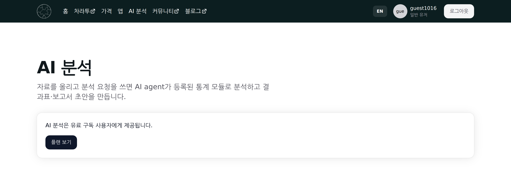
- 안내 아래 “플랜 보기”를 누르면 구독 신청 화면으로 이동. 가격 페이지 프로 플랜의 “구독 신청”도 같은 화면
- 관리자가 계정에 직접 부여한 구독도 그대로 쓸 수 있음(11장)
2.2.1 결제로 구독 신청
- 화면 구성: 플랜 카드(플랜 이름·금액·기간), 토스페이먼츠 결제위젯(결제 방법·약관 동의), “₩〈금액〉 결제하기” 버튼
- 시험 환경에서는 위젯에 “테스트 환경이에요. 실제로 결제되지 않아요.”가 보임
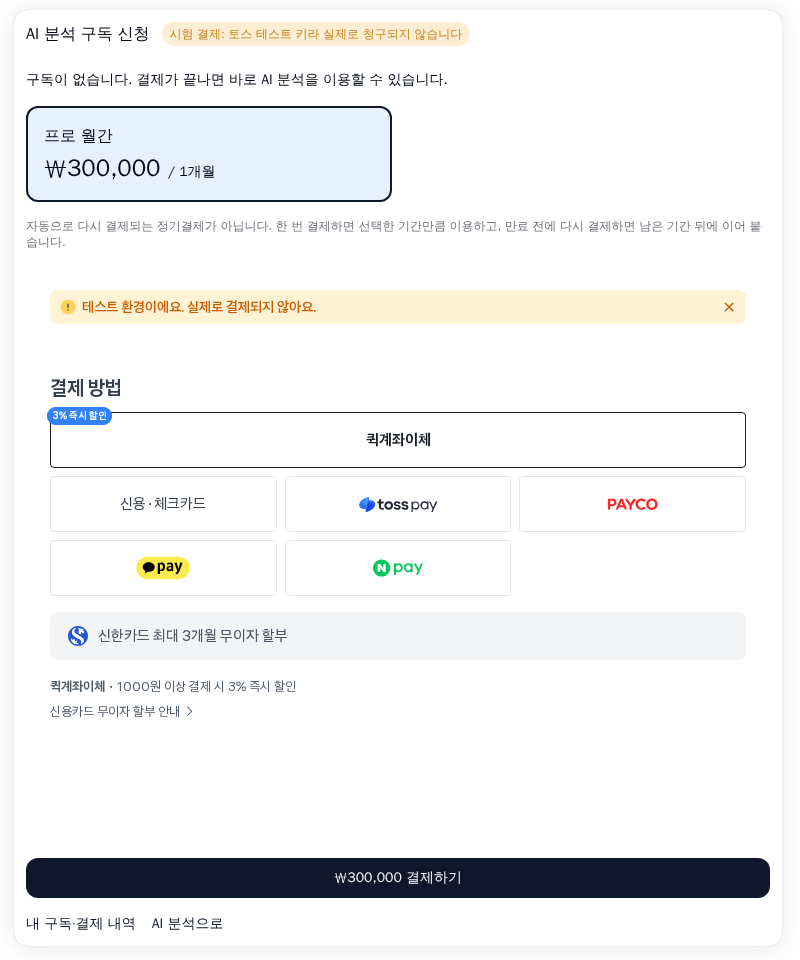
결제 순서:
- 플랜 선택
- 결제위젯에서 결제 방법 선택. 신용·체크카드는 카드사와 할부(일시불 등)까지 고름
- 필수 약관 동의 확인
- “₩〈금액〉 결제하기” 클릭 → 토스페이먼츠 결제창에서 결제(카드사 인증·간편결제 로그인)
- 결제가 끝나면 결제 완료 화면: 플랜, 결제 금액, 결제수단, 승인 시각, 주문번호, 영수증, 구독 만료와 “AI 분석 시작” 버튼
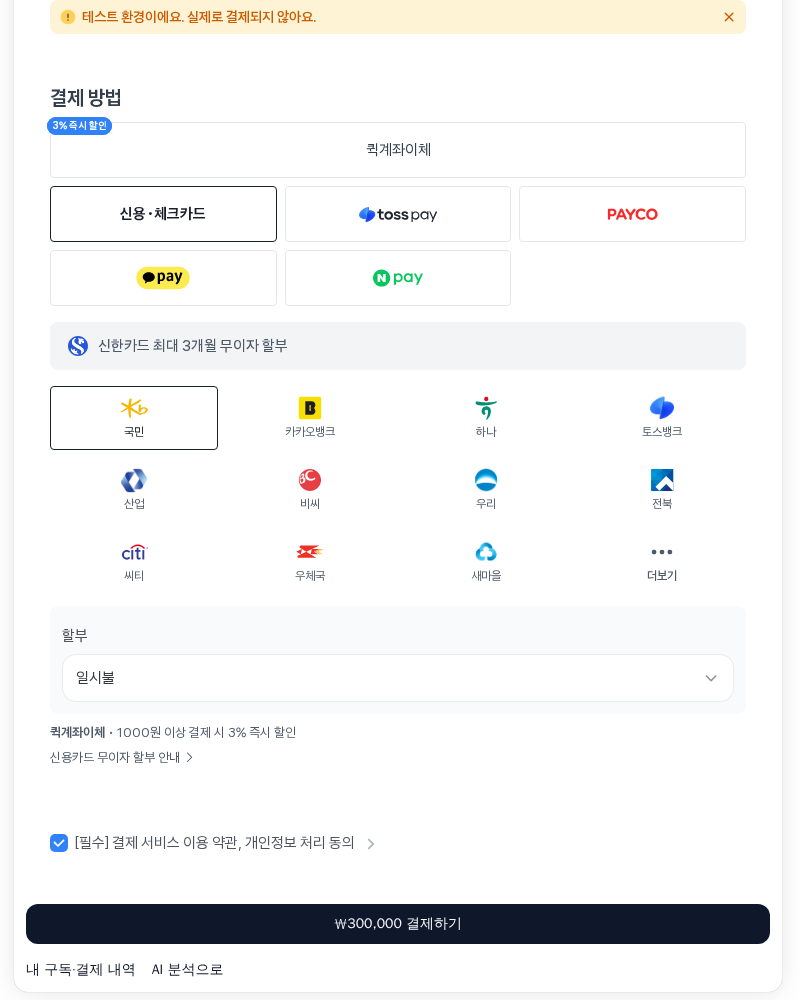
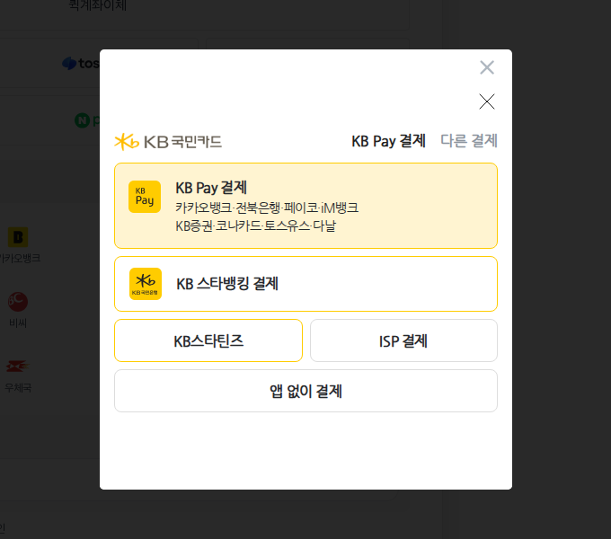
- 금액은 서버가 정함. 화면의 금액을 바꿔 결제하면 승인되지 않음
- 정기결제가 아님: 한 번 결제하면 1개월(연간 플랜은 1년) 이용. 만료 전에 다시 결제하면 남은 기간 뒤에 이어 붙음
- 결제창을 닫으면 “결제를 취소했습니다.” → 결제·구독 변화 없음
- 결제가 실패하면 실패 화면에 결제사가 준 코드와 메시지가 나옴
- 가상계좌는 받지 않음
2.2.2 내 구독·결제 내역
- AI 분석 화면 왼쪽 아래 “내 구독·결제 내역” 링크
- “내 구독”: 이용 상태(이용 중·구독 없음), 출처(토스 결제·관리자 부여), 만료일, “구독 신청” 또는 “구독 연장” 버튼
- “결제 내역”: 주문일, 플랜, 금액, 상태, 결제수단·승인, 영수증·비고. 승인되지 않은 주문(결제창을 닫은 주문 등)은 나오지 않음
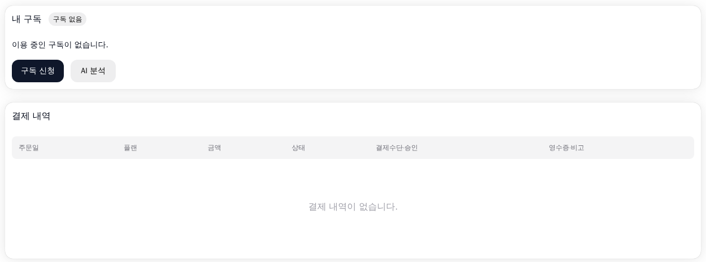
구독 상태별 동작:
| 상태 | AI 분석 |
|---|---|
| 구독 기간 안 | 사용 가능 |
| 해지했지만 만료일 전 | 만료일까지 사용 가능 |
| 만료일이 지남 | 위 안내가 나옴 |
| openstat 관리자, 지정된 전문가 검토자 | 구독 없이 사용 가능 |
- 만료일은 날짜 단위. 관리자가 정한 만료일 당일 23시 59분 59초(한국 시간)까지 사용 가능
2.3 화면 구성
- 맨 위: “AI 분석” 제목과 “자료를 올리고 분석 요청을 쓰면 AI agent가 등록된 통계 모듈로 분석하고 결과표·보고서 초안을 만듭니다.” 설명
- 그 아래가 작업 영역
- 넓은 화면: 왼쪽 좁은 열과 오른쪽 넓은 열로 나뉨
- 좁은 화면: 위아래로 쌓임
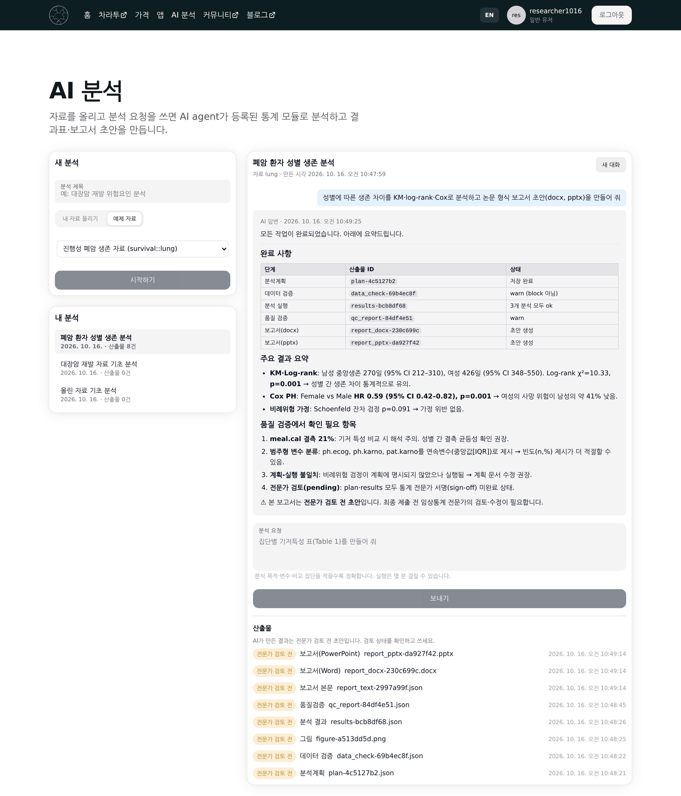
왼쪽 열:
- “새 분석” 카드: 분석 제목을 쓰고 자료를 골라 새 분석 시작(4장)
- “검토 대기” 카드: 전문가 검토자에게만 보임(10장)
- “내 분석” 카드: 내가 만든 분석 목록
- 최근 것이 위. 항목마다 제목, 만든 날짜, 산출물 수(“산출물 N건”) 표시
- 아직 없으면 “아직 분석이 없습니다.” 표시
오른쪽 열(분석 창):
- 분석을 고르기 전에는 “새 분석을 시작하거나 내 분석에서 하나를 고르세요.” 표시
- 분석을 고르면 맨 위에 제목과 “자료 〈자료 ID〉 · 만든 시각 〈날짜와 시각〉” 표시
- 대화가 있으면 오른쪽 위에 “새 대화” 버튼이 생김
- 그 아래: 대화(내 요청과 AI 답변), 요청 입력 칸, 실행 버튼
- 구분선 아래 “산출물” 목록: AI가 만든 파일이 검토 상태와 함께 나옴
이 문서에서 쓰는 말:
| 말 | 뜻 |
|---|---|
| 분석 | “내 분석” 목록의 항목 하나. 자료 하나에 묶이고 그 자료로 한 대화와 산출물을 모두 담음. 다른 자료를 쓰려면 새 분석을 만듦 |
| 대화 | 한 분석 안에서 이어지는 요청과 답변의 묶음. “새 대화”로 끊고 새로 시작 가능 |
| 산출물 | AI가 만든 파일(분석계획, 분석 결과, 그림, 보고서 등). 대화가 바뀌어도 분석 안에 계속 남음 |
| 검토 상태 | 산출물마다 붙는 “전문가 검토 전”·“승인”·“수정 후 승인”·“반려” 표시 |
3 따라 해 보기: 예제 자료로 보고서까지
- 처음이라면 폐암 예제 자료로 한 번 끝까지 해 봄
- 순서: 분석 하나 실행 → 확인 질문 → 연구 전체와 보고서
- 단계별 자세한 설명은 뒤의 장에 있음
3.1 1단계: 새 분석 만들기
- 로그인한 뒤 위쪽 메뉴의 “AI 분석” 클릭
- “새 분석” 카드의 “분석 제목”에 “폐암 성별 생존 비교(연습)” 입력
- “예제 자료” 탭 클릭
- 목록에서 “진행성 폐암 생존 자료 (survival::lung)” 선택
- “시작하기” 클릭 → 오른쪽에 분석 창이 열리고 위쪽에 “자료 lung” 표시
- 이 자료는 228명의 생존 자료
- 변수:
time(생존 일수),status(1 사망, 0 중도절단),sex(Male, Female),age,ph.ecog등(4.1절)
3.2 2단계: 분석 하나 실행하기
- 요청 칸에 아래 문장 입력
성별에 따른 생존곡선을 그리고 log-rank 검정과 중앙생존기간을 알려 줘- “분석 실행” 클릭
- AI가 Kaplan-Meier·log-rank 분석모듈을 골라 실행
- 분석모듈이 돌려주는 표 → AI가 답변에 정리
- 그룹별 대상자 수·사건 수·중앙생존시간과 95% 신뢰구간 표
- 시점별 생존율 표
- log-rank 검정(카이제곱, 자유도, p값) 표
- 답변 아래 “산출물”에 “분석 결과(바로 실행)” 1건과 생존곡선 그림이 생김(1.4절)
- 분석 결과 파일에는 요청 문장, 실행한 분석모듈과 인자, 결과표, AI 답변이 함께 들어 있음
- 둘 다 “검토 전” 상태. 검토자가 승인·수정·반려할 수 있음
- 답변에서 확인할 두 가지
- 쓴 방법이 Kaplan-Meier와 log-rank 검정인지
- 그룹이 성별(
sex)인지
3.3 3단계: 확인 질문에 답해 보기
- 오른쪽 위 “새 대화” 클릭
- 일부러 모호하게 요청
분석해 줘- 목적과 변수가 없으므로 AI가 무엇을 분석할지 물음
- 확인 질문으로 답이 끝나면 요청 칸 이름이 “답변”으로 바뀜
- 질문에 맞춰 답 입력
성별(sex)에 따라 사망 위험(time, status)이 다른지 보고 싶어. 나이(age)를 보정해 줘- “보내기” 클릭 → AI가 앞의 질문과 이 답을 함께 보고 이어서 진행
- 2026-10-10 시험에서도 이렇게 확인 질문에 같은 대화로 답하면 이어서 진행됨
- 다만 모호한 요청에 항상 되묻지는 않음 → 실제로 쓸 때는 처음부터 변수를 적음(6.4절)
3.4 4단계: 연구 전체와 보고서 요청하기
- 다시 “새 대화” 클릭
- 아래 내용으로 요청
성별에 따른 생존 차이를 KM·log-rank·Cox로 분석하고 논문 형식 보고서 초안(docx, pptx)을 만들어 줘- 이번에는 분석계획 → 데이터 검증 → 계획 실행 → 품질검증 → 보고서 순서로 진행
- 2026-10-10 시험 환경에서 이 요청은 69초 걸림. 산출물 8개(분석계획, 데이터 검증, 분석 결과, 그림, 품질검증, 보고서 본문, Word, PowerPoint) 생성
- 계획에 넣는 분석의 수는 AI가 정함 → 그림 수와 산출물 수는 달라질 수 있음
- 답변에 적히는 것: 한 일, 만든 산출물의 ID, 품질검증에서 확인할 항목, 전문가 검토가 필요하다는 점
- 산출물 목록에는 모두 “전문가 검토 전”이 붙어 있음
3.5 5단계: 산출물 확인하기
- 산출물을 아래 순서로 내려받아 봄. 읽는 법은 7장
- 분석계획(
plan-….json)- 분석 목록에 Kaplan-Meier·log-rank와 Cox 회귀가 있는지
- 그룹이
sex인지 - Cox 회귀의 보정 변수가 무엇인지
- 데이터 검증(
data_check-….json): 종합 판정과warn항목 확인 - 분석 결과(
results-….json): 분석마다status가ok인지, 경고가 있는지 확인 - 그림(
figure-….png): 생존곡선 열기 - 품질검증(
qc_report-….json): 종합 판정 확인- 아직 검토 전이므로
review점검 때문에warn이 나오는 것이 정상
- 아직 검토 전이므로
- 보고서(Word)
- 첫 쪽의 “검토 전 초안 — 전문가 검토 전에는 외부 제출에 쓰지 않는다”
- 결과의 표와 그림
- 끝의 “부록: 실행 기록”
- 서술의 수치를 결과표와 대조
3.6 6단계: 이어서 해 볼 것
- 같은 대화에서 “결과를 요약해 줘”를 보내면 결과 요약 문서가 생김
- “표와 그림만 모아 줘”를 보내면 AI 서술 없이 표와 그림만 모은 문서가 생김
- 원발성 담즙성 간경변(
pbc) 예제로 새 분석을 만들어 “치료군별 생존분석 해 줘” 보내 보기status가 0/1/2라 AI가 0/1 사건 변수가 필요하다며 되물음- 이어서 “간이식을 경쟁위험으로 보고 치료군별 사망 누적발생률을 비교해 줘”로 바꿔 보냄
- 검토자가 있다면 계획과 결과의 검토를 받은 뒤 “기존 결과로 보고서만 다시 만들어 줘”를 보내 보고서의 검토 상태 줄이 바뀌는지 확인(8.5절)
4 새 분석 시작하기
- 분석은 자료 하나에 묶임. 처음 만들 때 고른 자료는 바꿀 수 없음
- 다른 자료를 쓰려면 새 분석을 만듦
- 같은 자료로 주제만 바꾸려면 새 분석 대신 분석 창의 “새 대화” 사용(6.5절)
- 왼쪽 “새 분석” 카드의 “분석 제목” 칸에 제목 입력(예: “대장암 재발 위험요인 분석”)
- 제목은 “내 분석” 목록에 보임. 분석계획에 제목이 따로 없으면 보고서 제목으로도 쓰임
- AI도 제목을 참고함
- 자료 선택
- 아래 버튼 클릭
- 버튼 이름: “내 자료 올리기” 탭이면 “올리고 시작하기”, “예제 자료” 탭이면 “시작하기”
- 제목을 쓰지 않았거나 파일을 고르지 않았으면 버튼이 눌리지 않음
- 오른쪽에 새 분석 창이 열리고 “내 분석” 목록 맨 위에 추가됨
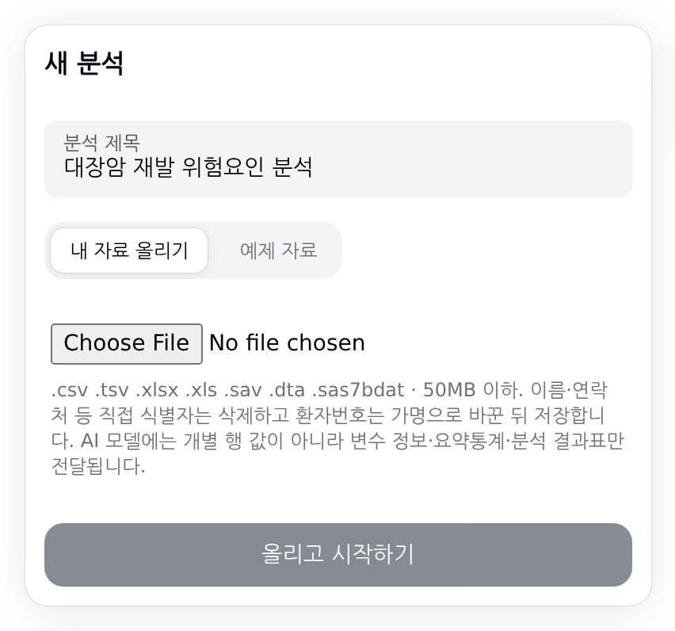
4.1 예제 자료
- 내 자료를 올리기 전에 예제 자료로 연습 가능
- 예제는 R
survival패키지에 들어 있는 공개 임상시험 자료. 화면에서는 아래 셋을 고를 수 있음
| 화면 이름표 | 자료 ID | 행 × 열 | 설명(R 실행 서비스 카탈로그) |
|---|---|---|---|
| 대장암 보조항암요법 임상시험 (survival::colon) | colon_recur |
929 × 14 | 대장암 보조항암요법 임상시험(재발 사건 행만, etype == 1) |
| 진행성 폐암 생존 자료 (survival::lung) | lung |
228 × 10 | NCCTG 진행성 폐암 환자 생존 자료. status를 0(중도절단)/1(사망)로 재코딩 |
| 원발성 담즙성 간경변 임상시험 (survival::pbc) | pbc |
312 × 20 | 원발성 담즙성 간경변 임상시험(무작위 배정 312명). status 0 중도절단/1 이식/2 사망 |
- 예제 자료로 요청을 쓰려면 변수 이름과 뜻을 알아야 함. 아래는
survival패키지 설명서를 바탕으로 정리한 주요 변수 - 범주 변수의 코드 의미(예: 0과 1이 무엇인지)는 자료 안에 적혀 있지 않아 AI도 모름 → 결과 해석에 필요하면 요청에 적음(예: “sex는 1이 남성이다”)
대장암(colon_recur):
- 대장암 수술 뒤 보조항암요법을 비교한 임상시험 자료에서 재발 사건 행만 남긴 것
- 변수:
rx(치료군: Obs 관찰, Lev 레바미솔, Lev+5FU 레바미솔+5-FU),sex(1 남성),age(나이),obstruct(종양에 의한 장폐색),perfor(장천공),adhere(주변 장기 유착),nodes(암이 발견된 림프절 수),node4(양성 림프절 4개 초과),differ(분화도 1 좋음·2 중간·3 나쁨),extent(국소 침윤 범위 1–4),surg(수술에서 등록까지 기간 0 짧음·1 김),time(재발 또는 중도절단까지 일수),status(1 재발, 0 중도절단),id(대상자 번호)
폐암(lung):
- 진행성 폐암 환자의 생존 자료
status는 원래 1(중도절단)/2(사망)이던 것을 0/1로 바꿔 둠 → 그대로 생존분석에 쓸 수 있음- 변수:
time(생존 일수),status(1 사망, 0 중도절단),age(나이),sex(Male, Female),ph.ecog(의사가 평가한 ECOG 수행 상태 0–4),ph.karno(의사가 평가한 Karnofsky 점수),pat.karno(환자가 평가한 Karnofsky 점수),meal.cal(식사 열량),wt.loss(최근 6개월 체중 감소, 파운드),inst(기관 번호)
원발성 담즙성 간경변(pbc):
- 무작위 배정된 312명만 남긴 임상시험 자료
status가 0(중도절단)·1(간이식)·2(사망) 세 값 → 일반 생존분석(Kaplan-Meier, Cox)에 바로 쓸 수 없음- 사건을 0/1로 바꾸는 기능이 없음 → 일반 생존분석을 시키면 AI가 0/1 사건 변수가 필요하다며 되물음
- 쓰는 곳: 간이식을 competing risk로 두는 분석(cumulative incidence(CIF), Fine-Gray 모형)이나 그룹 비교 연습. 일반 생존분석은 대장암·폐암 예제로 연습
- 주요 변수:
trt(D-penicillamine, Placebo),age,sex(m, f),ascites(복수),hepato(간비대),spiders(거미혈관종),edema(부종 0·0.5·1),bili(빌리루빈),chol(콜레스테롤),albumin(알부민),copper(소변 구리),alk.phos(알칼리성 인산분해효소),ast(AST),trig(중성지방),platelet(혈소판),protime(혈액 응고 시간),stage(조직학적 병기 1–4),time(일수)
4.2 자료 구조 확인하기
- 화면에는 자료의 변수 목록을 따로 보여 주는 칸이 없음
- 분석 창 위쪽에 자료 ID만 나옴(예제는
lung같은 이름, 올린 자료는up_로 시작하는 문자열) - AI는 분석을 시작할 때 자료 구조(변수 이름, 형식, 결측 수, 범주 목록, 요약통계)를 받음 → “이 자료에 어떤 변수가 있는지 표로 보여 줘”처럼 물어볼 수 있음
- 답은 AI가 정리한 것 → 정확한 열 이름은 내 원본 파일과 업로드 처리 결과를 함께 보고 확인
- AI에게 주지 않는 정보
- 올린 자료: 개인 한 명의 값이 될 수 있는 최솟값·최댓값
- 범주가 30개를 넘는 열(가명 ID, 자유 텍스트 등): 어느 자료든 값 목록 없이 범주 개수만 줌
5 내 자료 올리기
- 내 자료로 분석하려면 “새 분석” 카드의 “내 자료 올리기” 탭에서 파일을 고르고 “올리고 시작하기” 클릭
- 파일은 서버에서 식별자 열 삭제 → 가명처리 → 재식별 위험 점검을 거쳐 정제본으로 저장. 분석은 이 정제본으로 함
5.1 지원 형식과 크기 제한
- 받는 형식:
.csv,.tsv,.xlsx,.xls,.sav,.dta,.sas7bdat - 크기: 50MB 이하
- 파일 선택 창도 이 형식만 보여 줌
| 형식 | 읽는 방식과 주의할 점 |
|---|---|
.csv, .tsv |
쉼표·탭으로 구분한 글자 파일. UTF-8로 저장. 빈칸과 NA를 결측으로 읽음 |
.xlsx, .xls |
엑셀 파일. 첫 번째 시트만 읽음 |
.sav, .dta, .sas7bdat |
SPSS·Stata·SAS 파일. 값 레이블(예: 1 = 남성)은 지워지고 코드값만 남음 |
5.2 올리기 전에 준비할 것
- AI 분석에는 자료를 가공하는 기능이 없음 → 분석에 필요한 형태는 올리기 전에 만들어 둠
- 아래를 확인하면 올린 뒤 되묻는 일이 줄어듦
- 한 행은 분석 단위 하나(대상자 한 명, 또는 반복측정 자료라면 측정 한 번). 첫 행은 열 이름
- 합계 행, 설명 행, 병합한 셀은 지움
- 열 이름은 영문·숫자·밑줄로
- 공백이나 특수문자가 있으면 R 이름 규칙에 맞게 바뀜(공백은 점으로, 숫자로 시작하면 앞에
X가 붙음) - 바뀐 이름은 화면에 따로 표시되지 않음
- 공백이나 특수문자가 있으면 R 이름 규칙에 맞게 바뀜(공백은 점으로, 숫자로 시작하면 앞에
- 분석에 쓸 열 이름에 아래 5.4절의 식별자 단어가 들어가지 않게 함
- 예: 출생 체중을
birth_weight로 두면birth가 들어가 있어서 열 전체가 지워짐 →bwt처럼 바꿔 둠
- 예: 출생 체중을
- 생존분석의 사건 변수는 0과 1로(1 = 사건, 0 = 중도절단)
- 추적 시간은 0보다 큰 숫자로 계산해 둠
- 날짜 두 개를 주고 기간을 계산하게 할 수는 없음
- 범주 변수는 가능하면 1/2 같은 숫자 대신 글자 값(Male/Female, 치료/대조)으로
- AI는 코드의 뜻을 짐작하지 않음 → 숫자 코드는 결과표와 답변에도 숫자로 나옴
- 결측은 빈칸으로. 999나 -9 같은 숫자로 결측을 적으면 실제 값으로 계산됨
- 나이 구간, 합친 범주, 파생 지표처럼 분석에 쓸 변수는 미리 만들어 둠
5.3 업로드 후 처리 과정
- “올리고 시작하기”를 누르면 파일이 서버로 가서 아래 순서로 처리됨
- 화면에는 처리가 끝난 뒤 결과가 한 번에 나옴
flowchart TD
F[올린 파일] --> R[읽기·열 이름 정리]
R --> D[직접 식별자 열 삭제]
D --> P[식별번호 열 가명처리]
P --> C{개인정보 의심이 남았나}
C -->|예| X[등록 거부]
C -->|아니오| K[재식별 위험 점검]
K --> S[정제본 저장]
- 직접 식별자 열 삭제
- 열 이름에 이름·연락처·주소·주민등록번호·생년월일을 뜻하는 단어가 있으면 열 전체 삭제
- 글자 값 안에 주민등록번호·휴대전화 번호·유선전화 번호(
02-123-4567처럼 구분자가 있는 것)·이메일 형태가 한 건이라도 섞여 있어도 열 전체 삭제 - 예: 메모 열에 “보호자 연락처 010-…” 같은 내용이 한 줄만 있어도 그 메모 열이 지워짐
- 숫자 열은 값의 절반 이상이 주민등록번호 형태(13자리, 앞자리 0이 빠진 12자리 포함)면 열 전체 삭제
- 환자번호·차트번호 같은 식별번호 열은 지우지 않고 가명으로 바꿈
- 값마다 16자리 문자열로 바뀜
- 같은 번호는 같은 가명이 됨 → 한 사람의 여러 행을 묶는 데는 계속 쓸 수 있음
- 처리한 뒤 자료를 다시 점검. 개인정보로 보이는 열이 남아 있으면 등록하지 않음
- 가명으로 바꾼 열은 이 점검에서 뺌(16자리 가명 안의 숫자가 우연히 번호 형태가 되어 등록이 거부되지 않게)
- 재식별 위험 점검
- 나이·성별·우편번호·지역·인종 같은 준식별자 열을 찾아 그 값 조합이 같은 사람이 몇 명씩 있는지 셈
- 이 결과로 등록을 막지는 않음. 위험 등급만 알려 줌
- 처리한 자료(정제본)만 서버에 남김. 올린 원본 파일은 처리가 끝나면 성공·실패와 관계없이 지움
- 이후 분석은 모두 정제본으로 함
- 지워진 열은 분석에 쓸 수 없음
- 가명처리한 열은 원래 값이 아님
5.4 열 이름 기준 처리 규칙
- 영문 단어: 열 이름을 소문자로 바꾼 뒤, 단어가 이름 전체이거나 앞뒤가 밑줄(
_)·점(.)·숫자·한글로 끊긴 한 부분이면 걸림patientName,PatientID처럼 대문자로 낱말을 나눈 이름은 대문자 앞에서 끊어 봄- 걸림:
patient_name,name.kor,tel_home,PatientName,환자ID - 안 걸림:
username,telomere,width
- 한글 단어: 붙여 쓴 이름이 많으므로 이름 안 어디에 있어도 걸림(공백·밑줄·점은 빼고 봄)
- 걸림:
환자이름,보호자연락처,휴대폰번호,집 주소,환자 번호
- 걸림:
- 직접 식별자와 식별번호 단어가 함께 있으면 직접 식별자로 보고 열을 지움
| 규칙 | 열 이름 단어 | 처리 |
|---|---|---|
| 직접 식별자 | 영문 name, firstname, lastname, fullname, surname, givenname, familyname, patientname, ptname, phone, telephone, tel, cellphone, mobile, email, e_mail, mail, addr, address, ssn, rrn, jumin, birth, birthdate, birthday, dob / 한글 성명, 이름, 성함, 환자명, 보호자명, 전화, 연락처, 휴대폰, 핸드폰, 이메일, 메일, 주소, 주민, 생년월일, 생일 |
열 삭제 |
| 식별번호 | 영문 id, pid, patientid, ptid, subjectid, subjid, usubjid, chart, chartno, mrn, hospno / 한글 환자번호, 등록번호, 차트번호, 병록번호, 연구번호, 대상자번호, 식별번호, 환자코드, 아이디 |
가명으로 바꿈 |
| 준식별자(재식별 위험 점검) | age, 나이, sex, gender, 성별, zip, 우편번호, region, 지역, 시도, race, 인종 |
그대로 두고 위험 점검에만 씀. 열 이름이 이 단어와 정확히 같을 때만 해당 |
id가 식별번호 단어 →visit_id,id_group같은 열도 가명으로 바뀜- 분석에 쓸 숫자나 범주가 이런 이름이면 올리기 전에 이름을 바꿈
5.5 처리 결과 확인하기
- 처리가 끝나면 “새 분석” 카드 아래에 결과가 나옴
- 이 결과는 올린 직후 이 카드에만 보이고 분석 창에는 저장되지 않음 → 화면을 새로 고치기 전에 확인하고 필요하면 적어 둠
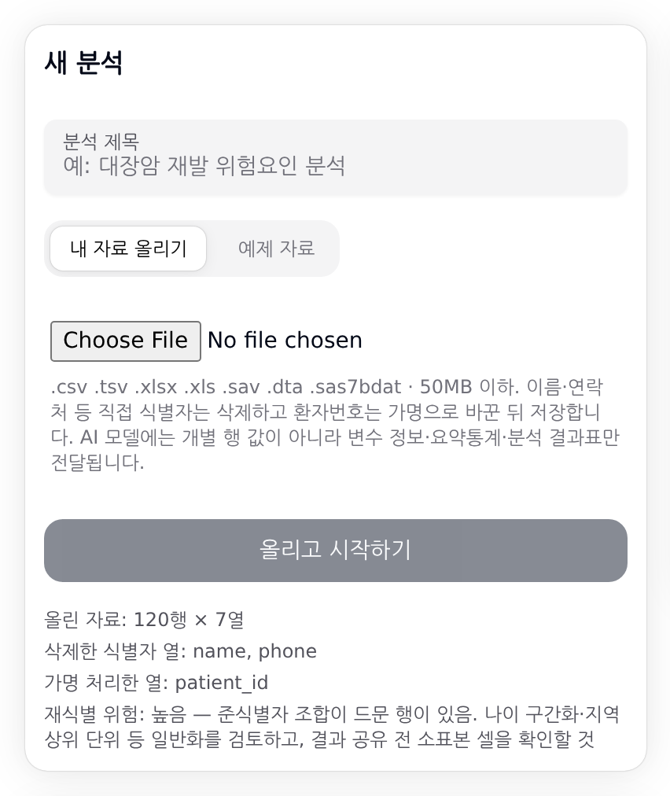
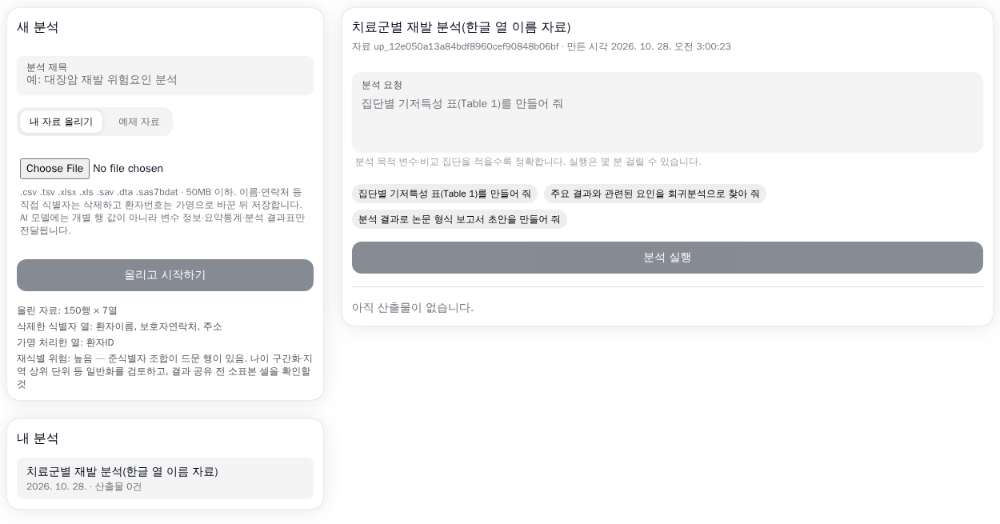
| 화면 표시 | 뜻 | 확인할 것 |
|---|---|---|
| “올린 자료: N행 × M열” | 정제본의 크기. 열 수는 지운 열만큼 줄어듦 | 행 수가 원래 자료와 같은지 |
| “삭제한 식별자 열: …” | 지운 열 이름 | 분석에 필요한 열이 들어 있지 않은지 |
| “가명 처리한 열: …” | 가명으로 바꾼 열 이름 | 분석 변수로 쓸 열이 들어 있지 않은지 |
| “재식별 위험: 낮음/중간/높음 — …” | 준식별자 조합 점검 결과 | 높음·중간이면 아래 설명대로 판단 |
- 해당하는 열이 없으면 그 줄은 나오지 않음. 준식별자 열이 하나도 없으면 재식별 위험 줄도 나오지 않음
- 분석에 필요한 열이 지워졌거나 가명으로 바뀌었으면 이 분석은 쓰지 않음 → 열 이름을 바꾼 파일로 새 분석을 만듦
재식별 위험 등급(준식별자 값 조합이 같은 사람 수로 정함):
| 등급 | 기준 | 화면 안내 |
|---|---|---|
| 높음 | 조합이 같은 사람이 1명뿐인 행이 있음 | 준식별자 조합이 드문 행이 있으니 나이 구간화·지역 상위 단위 같은 일반화를 검토하고 결과 공유 전 소표본 칸을 확인하라는 안내 |
| 중간 | 조합이 같은 사람이 5명 미만인 행이 있음 | 위와 같음 |
| 낮음 | 모든 조합에 5명 이상 있음 | 없음 |
- 나이를 한 살 단위 숫자로 두면 성별과 조합했을 때 드문 조합이 생기기 쉬움
- 등급이 높게 나와도 분석은 진행됨
- 다만 결과표의 작은 칸(1~4명)이 특정인을 드러낼 수 있음 → 결과를 논문이나 발표에 쓰기 전에 그런 칸을 확인
- 자료 자체를 공유할 계획이면 나이를 구간으로, 지역을 상위 단위로 바꾼 파일로 다시 올리는 방법 검토
- 올리기가 실패하면 버튼 아래에 빨간 글씨로 이유가 나옴. 자주 나오는 메시지와 대처는 9장의 표에 모음
6 요청 쓰는 법
- 분석 창의 요청 칸 이름은 “분석 요청”
- 칸 아래 안내: “분석 목적·변수·비교 집단을 적을수록 정확합니다. 실행은 몇 분 걸릴 수 있습니다.”
- 새 분석을 처음 열면 칸 아래에 예시 요청 세 개가 있음. 누르면 그 문장이 칸에 들어감
- “집단별 기저특성 표(Table 1)를 만들어 줘”
- “주요 결과와 관련된 요인을 회귀분석으로 찾아 줘”
- “분석 결과로 논문 형식 보고서 초안을 만들어 줘”
- 예시 요청은 출발점
- 그대로 보내면 어떤 변수로 집단을 나눌지, 무엇을 결과로 볼지를 AI가 정하거나 되물음
- 변수 이름을 넣어 고친 뒤 보냄
- 요청 칸에 요청 입력
- “분석 실행” 클릭
- 실행 중에는 버튼이 “분석 중”으로 바뀌고 눌리지 않음
- 대화가 시작된 뒤에는 버튼 이름이 “보내기”로 바뀜
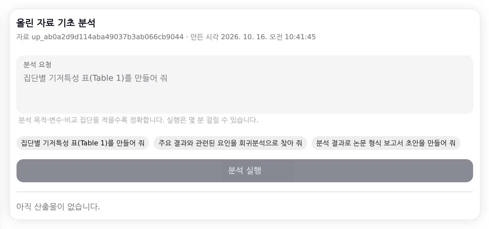
6.1 요청에 넣을 내용
- AI가 요청을 정확히 실행하려면 무엇을 알고 싶은지와 어떤 변수를 쓰는지가 필요
- 아래 요소를 아는 만큼 적음
| 요소 | 예 | 빠지면 |
|---|---|---|
| 알고 싶은 것(목적) | 치료군에 따라 재발 위험이 다른지 | AI가 되묻거나 흔한 분석을 골라 실행 |
| 결과변수 | 재발까지 시간 time, 재발 여부 status |
AI가 자료 구조를 보고 고름 |
| 비교 집단·노출 | 치료군 rx |
위와 같음 |
| 보정 변수 | 나이 age, 성별 sex, 림프절 수 nodes |
보정 없이 하거나 AI가 고름 |
| 방법(알면) | Kaplan-Meier, log-rank 검정, Cox 회귀 | AI가 자료 형식에 맞춰 고름 |
| 기준값 | landmark 기준 365일, 표본수 계산의 유의수준·검정력 | 기본값으로 실행될 수 있음 |
| 자료 특성 | 한 사람이 여러 번 측정됨, 병원별로 묶여 있음 | 일반 모형으로 실행될 수 있음 |
| 코드 의미 | sex는 1이 남성 |
결과에 코드값이 그대로 나옴 |
| 원하는 결과물 | 결과표만 / 분석계획서 / 논문 형식 보고서 Word·PowerPoint / 영문 | 답변만 받음 |
- 변수는 자료에 있는 이름 그대로 쓰는 것이 가장 확실
- 이름을 조금 틀리게 쓰거나 우리말로 써도(“림프절 수”) AI가 자료 구조에서 맞는 변수를 찾는 편. 비슷한 이름이 여럿이면 되물음
6.2 고쳐 쓴 예
| 처음 요청 | 문제 | 고친 요청 |
|---|---|---|
| “분석해 줘” | 목적도 변수도 없음. AI가 확인 질문을 함 | “대장암 예제에서 치료군(rx)별로 재발(time, status) 위험이 다른지 Kaplan-Meier 곡선과 log-rank 검정, 나이·성별·림프절 수(nodes)를 보정한 Cox 회귀로 분석해 줘” |
| “주요 결과와 관련된 요인을 회귀분석으로 찾아 줘” | 결과변수와 후보 요인이 없음 | “폐암 예제에서 사망(time, status)과 관련된 요인을 나이, 성별, ph.ecog로 Cox 회귀분석해 줘” |
| “성별 landmark 분석 해 줘” | 기준 시점이 없음. 기준 시점은 결과를 보기 전에 정해야 함 | “1년(365일)을 기준으로 landmark 분석해서 성별 생존을 구간별로 비교해 줘” |
| (PBC 예제) “치료군별 생존분석 해 줘” | status가 0/1/2라 일반 생존분석에 맞지 않음 |
“간이식을 경쟁위험으로 보고 치료군별 사망 누적발생률을 비교해 줘” |
| “성별 차이를 봐 줘” | 무엇의 차이인지 없음 | “성별에 따라 나이와 양성 림프절 수 평균이 다른지 비교해 줘” |
| “표본수 계산해 줘” | 효과 크기와 조건이 없음 | “대조군 사건률 0.036/인년, 치료군 0.06/인년, 연구 4년(등록 3년), 탈락률 0.02/년일 때 로그순위 검정 표본수를 구해 줘” |
- 표본수 계산은 자료가 필요 없는 분석. 다만 화면에서는 자료를 골라야 분석을 시작할 수 있음
- 예제 자료 아무것이나 골라 시작하면 됨
- 계산에는 자료 내용을 쓰지 않음
6.3 요청 종류별 예
| 원하는 것 | 요청 예 | 나오는 것 |
|---|---|---|
| 방법 질문 | “두 그룹 비율 비교에 Fisher 검정과 카이제곱 검정 중 무엇을 써야 해?” | 근거 표시가 붙은 답변. 산출물 없음 |
| 표 하나 | “치료군별로 나이, 림프절 수, 장폐색 여부의 기술통계표를 만들어 줘” | 답변 안의 결과표, 분석 결과(바로 실행) |
| 검정·모형 하나 | “성별에 따른 생존곡선을 그리고 log-rank 검정과 중앙생존기간을 알려 줘” | 답변 안의 결과, 분석 결과(바로 실행), 그림 |
| 연구 전체와 보고서 | “성별에 따른 생존 차이를 KM·log-rank·Cox로 분석하고 논문 형식 보고서 초안(docx, pptx)을 만들어 줘” | 분석계획, 데이터 검증, 분석 결과, 그림, 품질검증, 보고서 본문, Word, PowerPoint |
| 분석계획서 | “치료군별 재발 위험을 비교하는 분석계획을 세우고 통계분석계획서(SAP) 초안을 만들어 줘” | 분석계획, 보고서 본문, SAP 문서 |
| 결과 요약 | (분석 결과가 있을 때) “결과를 요약해 줘” | 결과 요약 문서 |
| 표·그림 묶음 | (분석 결과가 있을 때) “표와 그림만 모아 줘” | 표·그림(TLG) 문서. AI 서술 없음 |
| 자료 점검 | “분석 전에 데이터에 문제가 없는지 봐 줘” | 데이터 검증 |
| 다른 언어·형식 | “같은 결과로 영문 논문 보고서를 Word로만 만들어 줘” | 영문 Word 보고서 |
- “분석 하나”로 처리되는 요청은 답변과 “분석 결과(바로 실행)” 파일만 남음(1.4절)
- 결과 요약·표·그림 묶음·보고서는 계획을 실행한 “분석 결과”만 씀. 바로 실행한 결과는 쓰지 않음
- 보고서까지 필요하면 “분석계획을 세워 실행하고”, “보고서”, “표와 그림만 모아 줘”처럼 계획을 거치는 요청으로 씀
- 분석 결과가 아직 없는데 보고서나 요약을 요청하면 AI가 계획과 실행부터 함
6.4 확인 질문에 답하기
- 확인 질문: AI가 실행하지 않고 질문으로 답을 끝내는 것
- AI가 확인 질문을 하는 경우
- 목적·결과변수·노출이 불분명할 때
- 분석모듈이 실행 전 점검에서 사용자 확인이 필요하다고 판단할 때(예: 자료에 없는 변수, 형식이 맞지 않는 변수, 범주 수가 맞지 않는 그룹 변수)
- 확인 질문으로 답이 끝나면 바뀌는 것
- 요청 칸 이름: “답변”
- 칸 아래 안내: “AI가 확인 질문을 했습니다. 여기에 답하면 앞의 대화를 이어서 진행합니다.”
- 칸에 답 입력
- “보내기” 클릭 → AI가 앞의 요청과 질문을 함께 보고 이어서 진행
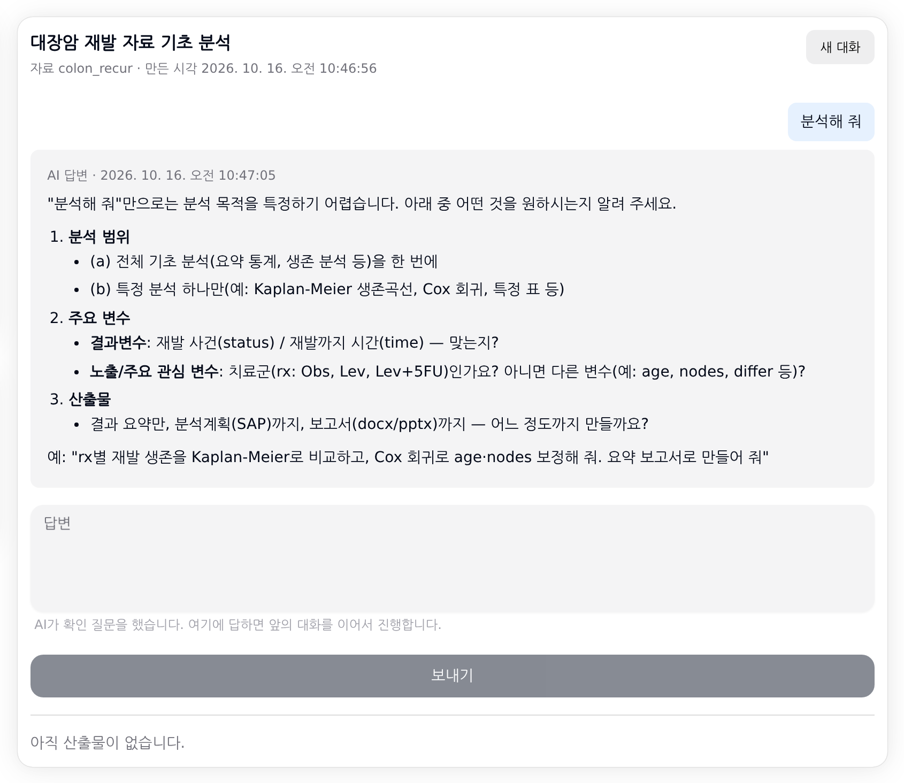
답하는 요령:
- 답은 짧아도 됨. 질문에 나온 항목은 빠짐없이 채움
- 질문이 여러 개면 번호를 붙여 답함
- 변수 이름으로 답함
- 예: AI가 “결과변수와 비교할 집단을 알려 주세요”라고 물으면 “결과는 재발(time, status), 비교 집단은 치료군(rx)”
- 처음 요청을 고쳐 다시 쓰고 싶으면 고친 요청 전체를 답 칸에 써도 됨
주의할 점:
- AI가 질문을 일반 답변 형식으로 하는 경우도 있음
- 이때는 칸 이름이 “답변”으로 바뀌지 않음. 같은 칸에 답을 쓰면 똑같이 이어서 진행
- 질문에 답할 수 없는 경우도 있음
- 예: 생존분석 사건 변수가 0/1이 아니라서 묻는 경우처럼 자료를 바꿔야 해결되는 질문
- AI 분석 안에서 변수를 바꿀 수는 없음 → 자료를 고쳐 새 분석으로 다시 올림
- AI가 항상 되묻지는 않음
- 품질 측정에서 모호한 요청의 절반 가까이는 되묻지 않고 그럴듯한 기본값으로 실행됨(14장)
- 확인 질문을 기다리기보다 처음부터 변수와 조건을 적는 편이 나음
6.5 대화 이어가기와 새 대화
- 같은 분석 안에서 요청을 이어 보내면 AI가 지금 대화의 앞선 요청과 답변을 함께 보고 처리
- 같은 대화에서 보낼 것: 확인 질문에 대한 답, “같은 모형에 흡연 여부를 추가해 줘”처럼 앞의 요청을 이어 받는 요청
- 특정 대상만 골라 다시 분석하는 기능(예: “60세 이상만 다시”)은 없음 → 그룹별로 나눠 보려면 subgroup 분석이나 층화 비교 모듈 요청(13장)
- AI가 함께 보는 범위: 지금 대화의 최근 4번의 요청·답변
- 그보다 앞선 내용은 넘어가지 않음 → 대화가 길어지면 중요한 조건(결과변수, 보정 변수, 원하는 형식)을 요청에 다시 적음
- 주제를 바꿀 때는 분석 창 오른쪽 위의 “새 대화” 클릭 → 다음 요청부터 앞의 대화와 끊고 새로 시작
- 새 대화를 시작하면 앞 대화는 내 화면에서 보이지 않음
- 기록은 서버에 남아 있음. 전문가 검토자는 검토 모드에서 모든 대화를 봄
- 산출물은 대화가 아닌 분석에 속함
- 새 대화에서 보고서를 요청해도 그 분석의 가장 최근 분석계획과 분석 결과를 씀 → 앞 대화에서 만든 결과로 보고서를 만들 때 새 대화를 써도 됨
- 반대로 다른 결과로 보고서를 만들려면 계획부터 다시 세우게 요청해야 함
| 하려는 일 | 쓸 것 |
|---|---|
| 확인 질문에 답하기, 방금 결과에 이어서 요청하기 | 같은 대화 |
| 같은 자료로 다른 주제를 분석하기 | “새 대화” |
| 다른 자료로 분석하기 | 새 분석(자료를 다시 고르거나 올림) |
| 이미 만든 결과로 보고서만 다시 만들기 | 같은 대화나 새 대화. “기존 결과로 보고서만 다시 만들어 줘”처럼 다시 분석하지 말라고 적음 |
6.6 기다리는 시간
- 실행 시간은 요청에 따라 다름
2026-10-10 시험 환경 실측값:
| 요청 | 걸린 시간 | 결과 |
|---|---|---|
| 대장암 예제, Table 1 요청 | 72초 | 답변 안의 결과표 |
| 폐암 예제, “성별에 따른 생존 차이를 KM·log-rank·Cox로 분석하고 논문 형식 보고서 초안(docx, pptx)을 만들어 줘” | 69초 | 산출물 8개(분석계획·데이터 검증·결과·그림·품질검증·보고서 본문·docx·pptx) |
- 분석 하나를 실행하는 요청: 품질 측정(2026-10-11, 1,585회 실행)에서 요청부터 답변까지 중앙값 19.7초, 95%가 62.5초 안에 끝남
- 측정 환경이 달라 화면에서 걸리는 시간과 같지는 않음
- 실행 중에는 창을 닫지 말고 기다림
- 분석모듈 하나의 실행 시간에는 제한이 있음 → 변수가 아주 많거나 반복 계산이 많은 분석(머신러닝 등)은 제한을 넘으면 멈추고 AI가 그 사실을 알림
- 서버가 10분 동안 응답하지 않으면 화면에 “AI 분석 서버가 지금 응답하지 않습니다. 잠시 후 다시 시도해 주세요.” 표시(9장)
7 결과 읽기
7.1 답변
- 요청을 보내면 분석 창에 표시
- 내 요청: 오른쪽 말풍선
- AI 답변: 그 아래 회색 상자. 상자 위에 “AI 답변 · 〈날짜와 시각〉”이 적힘
- 답변은 제목, 목록, 표를 갖춘 글로 나옴. 결과표는 화면에서 표로 보임
- 표가 넓으면 옆으로 밀어 봄
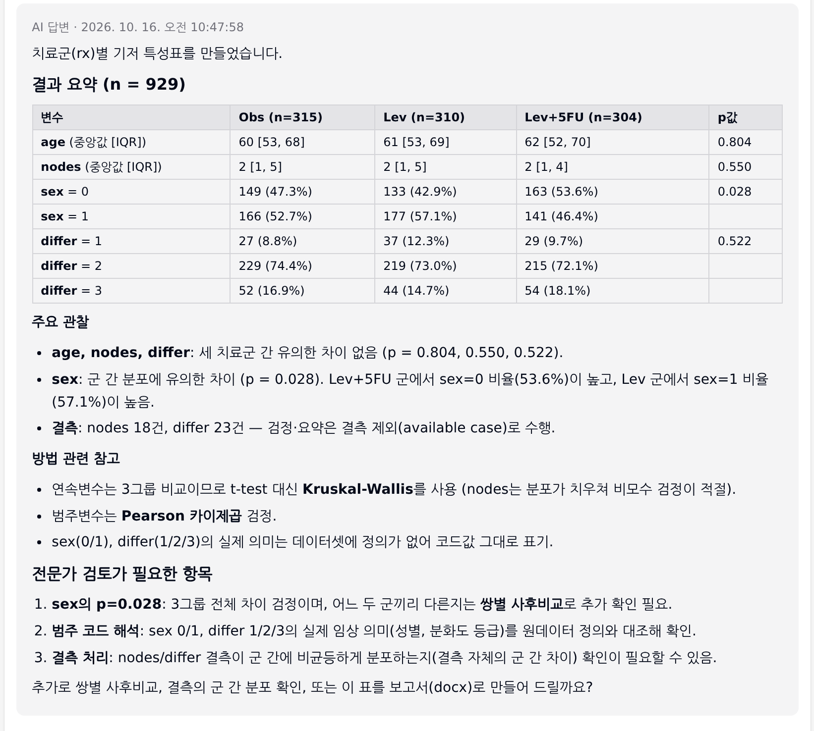
경로별 답변 내용:
- 분석 하나를 실행한 답변: 사용한 분석 방법, 주요 결과(결과표 수치), 해석상 주의점
- 연구 전체를 진행한 답변: 한 일, 만든 산출물(ID), 품질검증에서 확인할 항목, 전문가 검토가 필요하다는 점
- 산출물 ID(예:
plan-1a2b3c4d)는 산출물 목록의 파일 이름과 같음
- 산출물 ID(예:
- 방법 질문의 답변: 근거 표시(
[Skill:…],[KB:…])가 붙은 설명
답변이 이상해 보일 때:
- 답변 상자에 “답변 없음”이 나오면 AI가 정해진 단계 수 안에 일을 끝내지 못한 것 → 요청을 둘로 나누거나 범위를 줄여 다시 보냄
- 올린 자료를 분석한 답변에는 결과표의 작은 칸이 “<5”로 나올 수 있음
- AI에게 넘기기 전에 1~4건인 칸을 가리기 때문(12장)
- 실제 값은 산출물 파일에 있음
7.2 산출물 목록
- 분석 창 구분선 아래 “산출물”에 AI가 만든 파일이 최근 것부터 나옴
- 한 줄에 검토 상태, 종류 이름, 파일 이름(링크), 만든 시각
- 검토가 있었으면 그 아래 작은 글씨로 “〈결정〉 · 〈검토자〉 · 〈시각〉 · 〈사유〉”
- 목록 위 안내: “AI가 만든 결과는 전문가 검토 전 초안입니다. 검토 상태를 확인하고 쓰세요.”
- 산출물이 없으면 “아직 산출물이 없습니다.” 표시
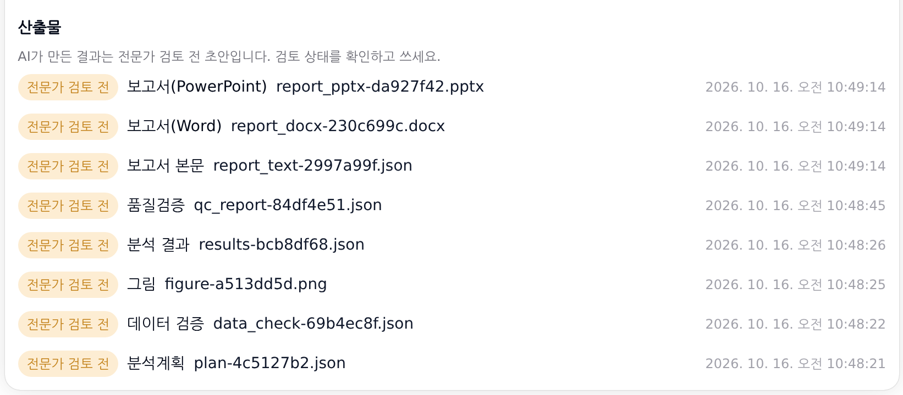
검토 상태 표시 4가지:
| 표시 | 뜻 |
|---|---|
| “전문가 검토 전” | AI가 만든 그대로. 모든 산출물은 이 상태로 생김 |
| “승인” | 검토자가 그대로 써도 된다고 판단 |
| “수정 후 승인” | 검토자가 수정이 필요하다고 판단. 사유가 있음. 검토자가 수정본을 올렸으면 “검토자 수정본” 표시가 붙은 새 산출물이 따로 생김 |
| “반려” | 검토자가 쓰지 말아야 한다고 판단. 사유를 읽음 |
7.3 산출물 종류
| 화면 이름 | 파일 | 생기는 때 | 내용 |
|---|---|---|---|
| 분석계획 | plan-….json |
연구 전체·계획서 요청 | 연구 목적, 설계, 분석 대상, 결과변수, 노출, 보정 변수, 분석 목록, 제한점 |
| 데이터 검증 | data_check-….json |
계획 실행 직전, 자료 점검 요청 | 종합 판정, 발견 항목, 변수별 요약, 분석별 입력 검증 결과 |
| 분석 결과 | results-….json |
계획 실행 | 분석마다 상태, 결과표, 주석, 경고, 오류, 실행 기록 |
| 분석 결과(바로 실행) | analysis-….json |
계획 없이 요청을 바로 실행해 분석이 하나 이상 성공했을 때 | 요청, AI 답변, 성공한 분석마다 분석모듈·인자·결과표·출처 |
| 그림 | figure-….png |
그림을 내는 분석을 실행할 때(계획 실행·바로 실행) | 생존곡선 같은 그림 한 장 |
| 품질검증 | qc_report-….json |
계획 실행 뒤 | 점검 항목별 판정, 종합 판정, AI 검토 의견과 권고 |
| 보고서 본문 | report_text-….json |
보고서를 만들 때(표·그림 묶음 제외) | AI가 쓴 방법·결과·요약·제한점 서술(수치 점검을 통과한 것) |
| 보고서(Word) | report_docx-….docx |
보고서를 만들 때 | 8장 |
| 보고서(PowerPoint) | report_pptx-….pptx |
보고서를 만들 때 | 8장 |
- JSON 파일은 글자 파일 → 웹 브라우저나 메모장으로 열어 볼 수 있음
- 바로 실행한 분석도 산출물로 남아 전문가 검토를 받음(10장)
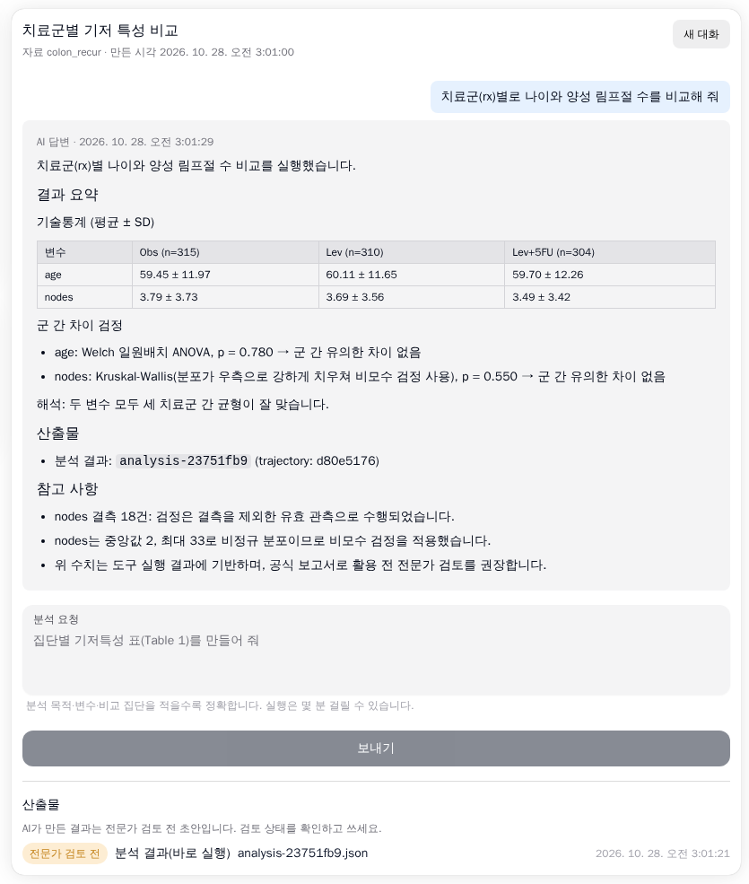
- 결과를 읽기 쉬운 형태로 보려면 Word 보고서를 받거나 “표와 그림만 모아 줘”로 표·그림 문서를 만듦7.4 분석계획 읽기
- 분석계획은 무엇을 어떻게 분석할지 정한 문서
- 실행 전에 만들어지므로 결과 수치는 없음
- 분석 목록(
analyses)의 항목 하나가 분석 하나
항목별 내용:
| 항목 | 뜻 | 확인할 것 |
|---|---|---|
id |
분석 번호(A1, A2 …). 결과와 보고서에서도 같은 번호를 씀 | |
role |
역할: descriptive(기술), primary(주분석), secondary(보조분석), sensitivity(민감도분석) |
주분석이 연구 질문에 맞는지 |
purpose |
목적 | |
skill_id |
쓸 분석모듈 ID(13장 목록과 같음) | 방법이 의도와 맞는지 |
params |
인자(결과변수, 그룹 변수, 보정 변수 등) | 변수가 맞는지 |
rationale |
이 방법을 고른 이유 | 근거가 타당한지 |
- 계획의 분석은 모두 실행 전 검증(변수가 있는지, 형식이 맞는지, 실행 조건을 만족하는지)을 통과해야 접수됨
- 검증 통과는 실행할 수 있다는 뜻. 연구 설계상 옳다는 뜻은 아님 → 변수와 방법이 연구 질문에 맞는지는 사람이 봄
7.5 데이터 검증 읽기
- 데이터 검증은 AI의 판단 없이 정해진 기준으로 자료를 점검
- 분석계획이 있으면
- 계획에 쓴 변수만 봄
- 계획의 분석마다 입력 검증도 한 번 더 함
종합 판정(overall)은 셋 중 하나:
block: 분석 전에 해결해야 함. 연구 전체를 진행하던 중이면 AI가 실행하지 않고 원인을 알린 뒤 멈춤warn: 확인 필요. 실행은 진행됨pass: 문제를 찾지 못함
발견 항목(findings)의 점검 이름과 기준:
| 점검 이름 | 판정 | 뜻 |
|---|---|---|
variable_exists |
block | 분석계획에 쓴 변수가 자료에 없음 |
missing |
block | 결측이 50%를 넘음 |
missing |
warn | 결측이 20%를 넘음 |
constant |
warn | 값이 하나뿐 |
extreme_values |
warn | IQR의 3배 밖에 있는 값이 있음 |
coding |
warn | 대부분 0/1인데 다른 값이 섞여 있거나 대소문자·공백만 다른 범주가 있음 |
many_levels |
warn | 범주가 50개를 넘음(자유 텍스트나 식별자일 수 있음) |
personal_info |
block | 열 이름이나 값이 개인정보 형태(값은 보이지 않고 건수만 나옴) |
identifier_like |
info | 행마다 값이 다른 정수(식별번호일 수 있음) |
rare_levels |
info | 관측 5건 미만인 범주가 있음 |
block이 나오면 원인 변수를 빼고 다시 요청하거나, 자료를 고쳐 새 분석으로 올림- 개인정보 의심 항목은 값을 보여 주지 않고 건수만 적음
7.6 분석 결과 읽기
분석 결과 파일의 results에 계획의 분석마다 들어 있는 항목:
| 항목 | 뜻 |
|---|---|
analysis |
계획의 분석(번호, 목적, 분석모듈 ID, 인자) |
skill |
실행한 분석모듈의 ID, 이름, 방법, 버전 |
status |
ok(정상) 또는 error |
tables |
결과표. 표 이름마다 행 목록 |
notes |
분석모듈이 붙인 주석(쓴 검정, 기준 범주 등) |
warnings |
경고(가정 위반, 결측이 많음, 수렴 문제 등) |
error |
오류일 때 코드, 처리 방식, 메시지, 복구 안내 |
provenance |
실행 기록: 분석모듈 버전, R 함수, 실행 시각, 인자 해시 |
- 답변이나 보고서의 수치를 확인할 때는 이 파일의
tables와 대조 - 결과표는 R이 계산한 값을 그대로 담은 것
7.7 품질검증 읽기
- 품질검증은 계획과 결과를 정해진 규칙으로 점검하고 AI가 그 결과를 보고 검토 의견을 덧붙인 것
- 점검 항목(
checks)마다pass·warn·fail중 하나가 붙음
| 점검 | 내용 |
|---|---|
execution |
계획의 분석이 모두 정상 실행됐는지 |
plan_adherence |
실행한 분석이 계획(분석모듈·인자)과 같은지 |
reproducibility |
같은 인자로 다시 실행하면 결과표가 같은지 |
warnings |
분석모듈이 낸 경고(하나마다 warn) |
method_fit |
자료 특성에 맞는 방법인지(예: 표본설계 자료에 일반 검정) |
data_quality |
계획에 쓴 변수의 결측이 20%를 넘는지 |
report_grounding |
보고서 서술의 수치가 결과에 있는지(품질검증 전에 보고서가 있을 때만) |
review |
분석계획과 분석 결과의 전문가 검토 상태 |
- 하나라도
fail이면 종합 판정(overall)은fail - 갓 만든 결과는 품질검증이 대개
warn으로 나옴- 분석계획과 분석 결과가 아직 “전문가 검토 전”이면
review점검이warn이기 때문
- 분석계획과 분석 결과가 아직 “전문가 검토 전”이면
- 그 밖의
warn·fail항목과review.comments(AI 의견),review.recommendations(권고)를 읽음- 의견에 대안 분석모듈 ID가 있으면 13장에서 찾아봄
7.8 내려받기
- 산출물 목록에서 파일 이름을 누르면 파일을 내려받음
- 여는 프로그램
- Word(
.docx)와 PowerPoint(.pptx): 각 프로그램 - 그림(
.png): 이미지 보기 - JSON: 브라우저나 글자 편집기
- Word(
- 내려받기도 로그인과 구독 확인을 거침. 내 분석의 파일만 받을 수 있음(검토자는 검토 대기에 올라온 분석의 파일도 받음)
8 보고서 만들기
- 보고서는 리포트생성 agent가 분석계획과 분석 결과로 만듦
- 표와 그림은 R 실행 결과를 그대로 옮김. AI는 방법·결과 해석·요약·제한점 서술만 씀
- 기본은 Word와 PowerPoint를 함께 만듦. 요청하면 한 가지만 만듦
8.1 보고서 종류
| 종류 | 문서에 적히는 이름 | 내용 | 요청 예 | 필요한 것 |
|---|---|---|---|---|
| 논문 | “통계 분석 결과(논문 Methods·Results 초안)” | 통계 분석 방법, 분석별 결과 서술·표·그림, 요약, 제한점 | “논문 형식 보고서 초안을 만들어 줘” | 분석 결과 |
| 통계분석계획서(SAP) | “통계분석계획서(SAP) 초안” | 연구 목적·설계·대상·결과변수·노출·보정 변수, 통계 방법, 분석 목록 표. 결과는 없음 | “분석계획서(SAP) 초안을 만들어 줘” | 분석계획 |
| CSR 통계 부분 | “임상시험 결과보고서(CSR) 통계 부분 초안” | 임상시험 결과보고서(ICH E3) 통계 부분의 방법·결과 서술과 연구 개요 | “CSR 통계 부분 초안을 만들어 줘” | 분석 결과 |
| 결과 요약 | “분석 결과 요약” | 분석마다 핵심 결과 한두 문장(효과 크기·신뢰구간·p값), 전체 결론과 해석상 주의점 3~5문장 | “결과를 요약해 줘” | 분석 결과 |
| 표·그림 묶음(TLG) | “표·목록·그림(TLG) 묶음” | 결과표와 그림만. AI 서술 없음 | “표와 그림만 모아 줘” | 분석 결과 |
- “필요한 것”이 아직 없으면 AI가 분석계획과 실행부터 함
- 언어는 한국어가 기본. “영문으로”라고 쓰면 항목 이름과 서술을 영어로 만듦
- 문서 제목은 분석계획이나 분석의 제목을 그대로 씀
8.2 Word 보고서의 구성
- Word 파일은 아래 순서로 만들어짐. 종류에 따라 없는 항목은 빠짐
- 제목(분석계획 제목, 없으면 분석 제목)과 문서 종류 이름
- 검토 상태 한 줄(굵게): “검토 전 초안 — 전문가 검토 전에는 외부 제출에 쓰지 않는다” 또는 “전문가 검토 완료”
- SAP·CSR이면 연구 목적, 연구 설계, 분석 대상, 결과변수, 노출·비교 변수, 보정 변수
- 통계 분석 방법
- SAP이면 분석 목록 표(분석 번호, 구분, 목적, 분석모듈, 근거)
- 결과
- 분석마다 “A1. 목적 (방법)” 소제목 아래 서술, “표 1. …” 결과표, “그림 1. …” 그림, 주석(“주:”)과 경고(“경고:”)
- 실행에 실패한 분석은 “실행 오류: …”로 적힘
- 요약, 제한점
- “부록: 실행 기록”: 분석마다 분석모듈과 버전, R 함수, 실행 시각, 인자 해시 앞 12자리
- 생성 시각과 분석·실행 ID
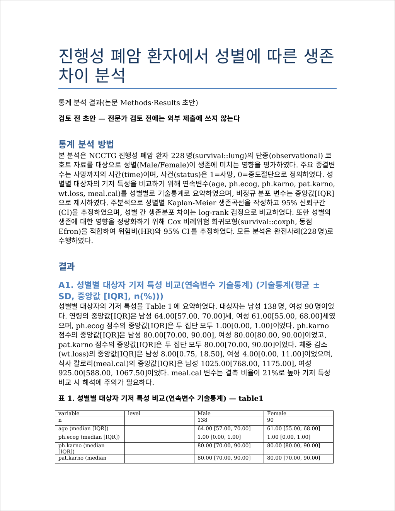
8.3 PowerPoint 보고서의 구성
- PowerPoint 파일은 발표용 요약
- 슬라이드 순서
- 표지(제목, 문서 종류, 검토 상태)
- 통계 분석 방법(최대 8줄)
- SAP이면 분석 목록(최대 10개)
- 분석마다 슬라이드 한 장
- 요약 슬라이드
- 분석 슬라이드에는 그 분석의 첫 번째 결과표(14행까지)와 첫 번째 그림만 들어감
- AI가 쓴 결과 서술은 발표자 노트에 들어감
- 결과표가 14행을 넘으면 슬라이드 아래에 남은 행 수가 영어로 적힘
- 전체 결과는 Word 보고서에서 봄
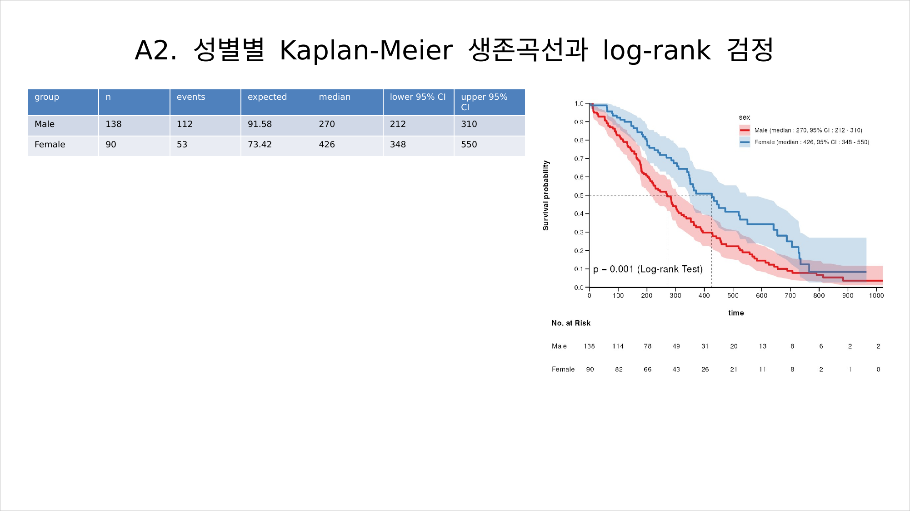
8.4 AI 서술 부분과 결과 그대로 옮기는 부분
- 보고서에서 AI가 쓰는 것은 서술뿐
서술을 받을 때 점검하는 규칙:
- 서술의 수치는 분석 결과의 표·주석이나 분석계획에 있는 값이어야 함
- 없는 수치가 들어가면 제출이 거부되고 AI가 결과에 있는 값으로 고쳐 다시 씀
- 이 점검을 통과하지 못하면 보고서가 만들어지지 않음
- 그래서 반올림하거나 새로 계산한 값(두 값의 차이, 비율, 합계)은 서술에 넣지 못하게 막음 → 결과표의 값을 그대로 인용
- 유의수준 0.05 같은 관례 상수는 예외
- 범주 코드의 뜻이 계획이나 결과에 없으면 서술에도 코드값 그대로 적음
- 분석모듈이 낸 경고(비례위험 가정, 다중비교 보정 없음 등)는 해석상 주의점이나 제한점에 반영하게 되어 있음
- 올린 자료라면 AI는 1~4건인 칸을 “<5”로 가린 결과표를 보고 씀
- 가려진 값은 서술에 쓰지 않음
- 문서에 들어가는 표는 R 결과 그대로라서 작은 칸의 실제 값이 들어 있음 → 외부에 내기 전에 확인
이 점검의 한계:
- 수치가 결과에 있는지만 봄. 잡지 못하는 문제:
- 효과의 방향을 반대로 씀
- 유의하지 않은 결과를 강하게 해석
- 방법 선택이 연구 설계에 맞지 않음
- 이런 부분은 전문가 검토로 확인
8.5 ‘검토 전 초안’ 표시
- 보고서의 검토 상태 줄은 보고서를 만드는 순간의 검토 상태로 정해짐
- 그 분석의 가장 최근 분석계획과 분석 결과가 모두 “승인” 또는 “수정 후 승인”이면 “전문가 검토 완료”
- 하나라도 아니면 “검토 전 초안 — 전문가 검토 전에는 외부 제출에 쓰지 않는다”
- SAP는 분석계획만 봄
- 이미 만든 파일의 문구는 나중에 바뀌지 않음
- 검토자가 계획과 결과를 승인해도 그 전에 만든 보고서에는 “검토 전 초안”이 그대로 남음
- 보고서 파일 자체를 승인해도 파일 안의 문구는 바뀌지 않음
“전문가 검토 완료”가 적힌 보고서를 받는 순서:
- 검토자가 분석계획과 분석 결과를 검토해 승인하거나 수정 후 승인
- 분석한 사용자가 “기존 결과로 보고서만 다시 만들어 줘”처럼 다시 분석하지 말고 보고서만 만들라고 요청
- 검토자는 검토 모드에서 요청을 보낼 수 없음 → 분석한 사용자가 해야 함
- 새로 만든 보고서를 검토자가 검토
경고
- “전문가 검토 완료”는 분석계획과 분석 결과가 검토를 거쳤다는 뜻. 그 뒤에 AI가 쓴 서술까지 검토했다는 뜻은 아님
- 서술은 새로 만든 보고서 산출물을 검토자가 따로 승인해야 검토를 거친 것이 됨
- 반려된 계획이나 결과로 만든 보고서에는 “검토 전 초안”이 적힘
8.6 보고서를 고쳐 쓸 때
- 내려받은 Word 파일은 자유롭게 고쳐 쓸 수 있음. 다만 서비스 밖에서 고친 내용은 기록에 남지 않음
- 검토자가 고친 파일을 기록과 함께 남기려면 전문가 검토의 “수정”으로 수정본을 올림(10장)
- 일반 사용자는 수정본을 올릴 수 없음
9 오류와 확인 질문 대처
- 문제를 알게 되는 방식은 두 가지
- 서비스 연결·파일 처리 문제: 화면에 빨간 글씨나 안내 문구로 나옴
- 분석 자체의 문제(변수가 없음, 형식이 맞지 않음): AI가 답변 안에서 설명하거나 확인 질문
9.1 화면에 나오는 메시지
| 메시지 | 뜻 | 할 일 |
|---|---|---|
| “로그인이 필요합니다.” | 로그인하지 않았거나 로그인이 끝남 | “차라투 커뮤니티 계정으로 로그인” 클릭 |
| “토큰이 만료되었습니다.” | 로그인 유지 시간이 지남. 잠시 뒤 홈으로 이동 | 다시 로그인 |
| “로그인이 만료되었습니다. 다시 로그인해 주세요.” | AI 분석을 쓰는 중에 로그인이 끝남 | “로그인” 클릭. 보내던 요청은 다시 보냄 |
| “AI 분석은 유료 구독 사용자에게 제공됩니다.” | 구독이 없거나 만료됨 | 구독 상태 확인(2.2절) |
| “AI 분석 서비스에 연결하지 못했습니다. …” | AI 분석 화면을 열 때 서버에 연결하지 못함 | 잠시 뒤 새로 고침 |
| “AI 분석 서버가 지금 응답하지 않습니다. 잠시 후 다시 시도해 주세요.” | AI 서버나 언어모델 서버가 응답하지 않음. 또는 실행이 10분을 넘음 | 아래 설명 참고 |
| “요청을 처리하지 못했습니다 (〈번호〉)” | 그 밖의 서버 오류. 50MB를 넘는 파일을 올리면 “(413)” | 파일 크기 확인. 같은 요청이 계속 실패하면 요청을 나눠 봄 |
| “지원하지 않는 형식: 〈확장자〉” | 받지 않는 파일 형식 | 받는 형식으로 저장해 다시 올림(5장) |
| “파일이 50MB를 넘음” | 파일이 크기 한도를 넘음 | 필요한 열만 남기거나 .xlsx처럼 압축된 형식으로 저장 |
| “가명처리 뒤에도 개인정보 의심: 〈열 이름〉” | 처리한 뒤에도 개인정보로 보이는 열이 남아 등록하지 않음 | 그 열을 빼거나 값을 정리해 다시 올림 |
| 영문 오류 메시지(파일 읽기 실패) | 파일을 읽지 못함(손상, 암호 설정, 구분자 문제 등) | 파일을 열어 확인하고 CSV(UTF-8)나 .xlsx로 다시 저장 |
| “프로젝트 없음” | 없는 분석이거나 다른 사용자의 분석 | “내 분석” 목록에서 다시 고름 |
“AI 분석 서버가 지금 응답하지 않습니다.”가 나왔을 때:
- 서버 쪽에서는 실행이 끝까지 진행돼 기록될 수도 있음
- 같은 요청을 바로 다시 보내면 같은 분석이 두 번 돌 수 있음 → 다시 보내기 전에 아래 순서로 확인
- 화면 새로 고침
- “내 분석”에서 그 분석을 다시 열기
- 답변과 산출물이 생겼는지 확인
- 없으면 요청을 작게 나눠 다시 보냄(예: 계획과 실행을 먼저, 보고서는 다음 요청으로)
다른 화면의 메시지:
9.2 AI가 실행을 멈추거나 되묻는 경우
- 분석모듈은 실행 전에 입력을 점검
- 점검 조건: 변수가 자료에 있는지, 형식이 맞는지, 그룹 수와 사건 수가 충분한지 등
- 문제가 있으면 오류 코드와 처리 방식을 돌려주고 AI는 그 방식을 따름
처리 방식:
- 확인 질문: 사용자가 정해 주면 해결되는 문제. AI가 무엇을 확인해야 하는지 물음(6.4절)
- 실행하지 않음: 이 자료와 방법으로는 실행할 수 없음. AI가 이유와 대안을 설명
- 경고하고 진행: 실행은 하지만 결과 해석에 주의 필요. 경고는 결과의
warnings와 보고서의 “경고:” 줄에 남음 - AI가 인자를 고쳐 다시 시도할 수 있는 문제면 한 번 다시 시도한 뒤 결과를 알림
오류 코드:
- 답변에 오류 코드가 함께 나오기도 함. 자주 나오는 코드는 아래 표
- “AI의 처리” 열: 등록된 분석모듈 명세에서 그 코드에 정해 둔 처리 방식(분석모듈마다 다르면 여럿을 적음)
| 오류 코드 | AI의 처리 | 뜻 | 할 일 |
|---|---|---|---|
E_COL_NOT_FOUND |
확인 질문 | 자료에 없는 변수 이름을 씀 | AI가 제안한 비슷한 이름 중 맞는 것을 골라 답함 |
E_TYPE_MISMATCH |
확인 질문 | 변수 형식이 분석에 맞지 않음(숫자가 필요한 자리에 범주형 등) | 다른 변수를 쓰거나 형식에 맞는 분석을 고름 |
E_ARG_CONFLICT |
확인 질문 | 같은 변수를 두 역할에 지정함(결과변수를 보정 변수에도 넣는 등) | 한 역할에서 뺌 |
E_MISSING_PARAM |
확인 질문 | 꼭 필요한 변수나 값이 빠짐 | 빠진 변수나 값을 알려 줌 |
E_INVALID_VALUE |
확인 질문 | 값이 허용 범위를 벗어남 | AI가 알려 주는 허용 값으로 다시 정함 |
E_GROUP_COUNT |
확인 질문 | 그룹 수가 방법에 맞지 않음(두 그룹 비교에 세 그룹 변수 등) | 세 그룹 이상 비교 방법을 쓰거나 범주를 합친 변수를 만들어 다시 올림 |
E_TOO_MANY_LEVELS |
확인 질문 | 범주가 너무 많음 | 범주를 합친 변수를 만들어 다시 올리거나 연속변수로 분석 |
E_EVENT_CODING |
확인 질문 | 사건 변수가 0/1이 아님 | 1 = 사건, 0 = 중도절단인 변수를 만들어 다시 올림 |
E_NONPOSITIVE_TIME |
확인 질문 또는 실행하지 않음 | 추적 시간에 0 이하인 값이 있음 | 시간 변수를 확인해 고친 자료를 다시 올림 |
E_CONSTANT_VARIABLE |
실행하지 않음 | 값이 하나뿐인 변수 | 그 변수를 빼고 다시 요청 |
E_TOO_FEW_ROWS |
실행하지 않음 | 분석할 수 있는 행이 너무 적음 | 결측이 적은 변수를 쓰거나 다른 분석을 고름 |
E_TOO_FEW_EVENTS |
실행하지 않음 | 사건이 너무 적어 결과가 불안정 | 사건 수를 보고하고 기술통계로 제시하거나 변수 수를 줄임 |
E_TIMEOUT |
실행하지 않음 | 실행 timeout을 넘음 | 변수 수, 반복 횟수, cross-validation 겹 수를 줄여 다시 요청 |
E_RUNTIME |
실행하지 않음 | 실행 중 오류 | 변수 형식과 결측을 확인하고 다른 변수로 다시 요청 |
W_MISSING_HIGH |
경고하고 진행 | 결측이 많음. 결측을 빼고 계산함 | 결과를 해석할 때 결측 규모를 함께 밝힘 |
W_NO_CONVERGENCE |
경고하고 진행 | 모형 추정이 수렴하지 않음 | 드문 범주를 합치거나 변수 수를 줄여 다시 요청 |
- 자료를 고쳐야 해결되는 오류(사건 코딩, 시간 값, 범주 합치기)는 AI 분석 안에서 해결할 수 없음 → 원본 파일을 고쳐 새 분석으로 다시 올림
9.3 결과가 예상과 다를 때
- AI가 요청을 잘못 이해했거나 다른 방법으로 실행한 경우가 있음
답변을 받으면 확인할 것:
- 답변에 적힌 분석 방법이 요청한 방법과 같은지
- 다르면 방법 이름을 분명히 적어 다시 요청
- 지원하지 않는 방법을 요청하면 그렇다고 설명하면서 비슷한 다른 분석을 “참고용”으로 실행하는 경우가 있음
- 결과표의 변수가 의도한 변수인지
- AI가 고른 변수가 다르면 변수 이름을 적어 다시 요청
- 등록된 분석인데 “지원하지 않는다”고 답했는지
- 13장 목록에서 기능 이름을 찾아 그 이름을 그대로 넣어 다시 요청
- 품질 측정에서 드문 분석을 찾지 못하고 지원하지 않는다고 답한 사례가 있었음
- 답변이 “답변 없음”인지
- AI가 정해진 단계 수 안에 끝내지 못한 경우
- 품질 측정에서는 요청하지 않은 분석을 되풀이하다 단계 한도에 닿은 사례가 있었음
- 원하는 분석만 적어 범위를 줄임
10 전문가 검토 (검토자용)
- AI가 만든 산출물은 모두 “전문가 검토 전” 상태로 생김
- 전문가 검토: 통계 전문가가 산출물을 하나씩 보고 승인·수정·반려를 남기는 절차
- 검토 결과는 분석한 사용자의 화면에 사유와 함께 보이고 Audit Trail에 남음
- 보고서의 “검토 전 초안” 표시도 이 검토 상태로 정해짐(8.5절)
10.1 검토자
- 검토자가 되는 계정
- openstat 관리자
- 서비스 운영자가 서버 설정으로 검토자로 지정한 사용자
- 화면에서 검토자를 지정하는 기능 없음
- 검토 권한은 로그인한 계정으로 서버가 정함. 요청 내용으로 바꿀 수 없음
- 검토자는 구독 없이 AI 분석 사용 가능
검토자의 AI 분석 화면:
- 일반 사용자 화면과 다른 점 두 가지
- 왼쪽 열의 “검토 대기” 카드
- 산출물마다 있는 “검토” 버튼
- 산출물 목록 위 안내도 “검토자는 산출물마다 승인·수정·반려를 남길 수 있습니다. 검토 기록은 Audit Trail에 남습니다.”로 바뀜
- “내 분석”에는 검토자 자신이 만든 분석만 나옴
10.2 검토 대기 목록
- “검토 대기” 카드: 모든 사용자의 분석 가운데 “전문가 검토 전” 산출물이 하나 이상 있는 분석을 최근 것부터 보여 줌
- 항목마다 제목과 “〈분석한 사용자〉 · 〈만든 날짜〉 · 검토 전 N건 / 산출물 N건” 표시
- 검토할 것이 없으면 “검토할 산출물이 없습니다.”가 나옴
- 카드 오른쪽 위 “검토 끝난 것도 보기” 클릭 → 산출물을 모두 검토한 분석도 함께 나옴. 다시 누르면 원래대로 돌아감
- 산출물이 하나도 없는 분석(방법 질문이나 분석 하나만 실행한 분석)은 목록에 나오지 않음
- 검토를 저장하면 건수가 줄어듦. 검토 전 산출물이 남지 않은 분석은 목록에서 빠짐
10.3 검토 모드
- 검토 대기 목록에서 다른 사용자의 분석을 열면 검토 모드가 됨
- 위쪽에 “분석한 사용자 〈이름〉”이 함께 나옴
- 그 분석의 대화가 모두 나옴. 사용자가 “새 대화”로 나눈 앞 대화까지 보임
- 요청 입력 칸 대신 “검토 모드입니다. 〈이름〉님의 분석이라 요청은 보낼 수 없고, 아래 산출물을 검토할 수 있습니다.”가 나옴
- 산출물마다 “검토” 버튼. 이미 검토한 산출물은 “다시 검토”로 나옴
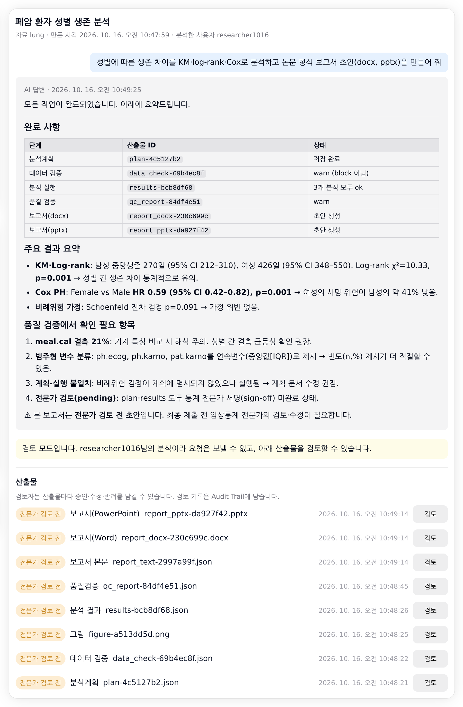
- 검토자는 검토 모드에서 요청을 보낼 수 없음 → 다시 실행하거나 보고서를 새로 만들어야 하면 사유에 적어 분석한 사용자에게 알림
- 검토자 자신의 분석에도 “검토” 버튼이 나옴. 자기 분석을 스스로 검토할지는 기관이나 운영 방침으로 정함
10.4 검토하기
- 산출물 파일 이름을 눌러 내려받기
- 내용 확인. 무엇을 볼지는 아래 10.7절
- “검토” 클릭 → “전문가 검토” 창이 열리고 위에 “〈종류〉 · 〈파일 이름〉”이 나옴
- “검토 결과”에서 “승인”, “수정”, “반려” 중 하나 선택
- 코멘트나 사유 입력
- 승인: “코멘트” 칸(선택)
- 수정·반려: 칸 이름이 “사유”로 바뀌고 꼭 적어야 함. 칸 아래에 “수정·반려는 사유를 적어야 저장됩니다. 분석한 사용자에게 보입니다.”가 나옴
- 사유를 적기 전에는 “저장”이 눌리지 않음
- 수정이면 수정본 파일 첨부(선택)
- 파일 선택 칸 아래 안내: “수정본 파일(.〈확장자〉, 선택). 붙이면 새 산출물로 저장되고 원본과 연결됩니다. 없으면 사유만 기록합니다.”
- “저장” 클릭. 그만두려면 “취소” 클릭
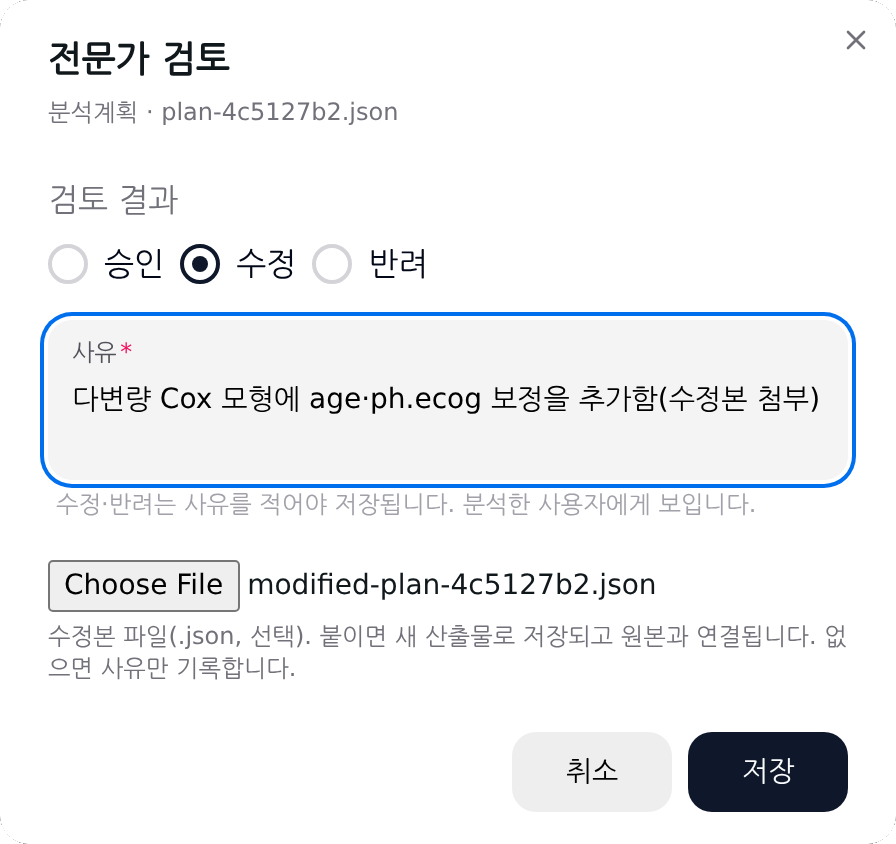
사유 쓰는 법:
- 사유는 분석한 사용자가 읽고 다음에 무엇을 할지 정하는 글
- 무엇이 문제인지와 함께 사용자가 할 일을 적음
- 예: “주분석에 나이가 보정되지 않음. age를 보정 변수에 넣어 계획부터 다시 요청할 것”
10.5 수정본 파일 규칙
- 수정본: 원본을 고친 파일(예: Word 보고서의 문장을 고친 파일, 분석계획 JSON의 인자를 고친 파일)
- 원본과 같은 형식이어야 함
.docx는.docx로,.json은.json으로,.pptx는.pptx로,.png는.png로 올림- 파일 선택 창도 원본과 같은 확장자만 보여 줌
- 다른 형식이면 “수정본은 원본과 같은 형식(.〈확장자〉)이어야 함” 오류
- JSON 수정본은 올바른 JSON이어야 함. 읽을 수 없으면 “수정본 JSON을 읽을 수 없음” 오류
- 50MB 이하여야 함(“파일이 50MB를 넘음”)
결정에 따른 상태:
| 결정 | 원본 산출물 | 새 산출물 | 사유 |
|---|---|---|---|
| 승인 | “승인” | 없음 | 선택 |
| 수정(파일 없음) | “수정 후 승인” | 없음 | 필수 |
| 수정(수정본 첨부) | “수정 후 승인” | 같은 종류의 새 산출물. “검토자 수정본” 표시, 상태 “승인” | 필수 |
| 반려 | “반려” | 없음 | 필수 |
- 검토자가 올린 수정본은 검토를 거친 것으로 보아 처음부터 “승인” 상태
- 같은 산출물을 “다시 검토”하면 새 결정으로 상태가 바뀜. 앞의 검토 기록도 지워지지 않고 남음
flowchart LR P[전문가 검토 전] -->|승인| A[승인] P -->|수정| M[수정 후 승인] P -->|반려| R[반려] M -.->|수정본 첨부| N[검토자 수정본<br/>승인] A & M & R -->|다시 검토| P2[새 결정]
10.6 검토 결과의 다음 단계 반영
- 품질검증과 보고서는 그 분석에서 종류별로 가장 최근 산출물을 씀
이 규칙 때문에 알아 둘 것 세 가지:
- 수정본을 올리면 그 수정본이 가장 최근 산출물이 됨
- 예: 분석 결과의 수정본을 올리면 그 뒤에 만드는 보고서는 수정본의 표를 씀
- 반려는 상태와 사유를 남길 뿐, 이후 단계에서 그 산출물을 쓰지 못하게 막지 않음
- 반려한 분석계획이 그대로 가장 최근 계획이면 사용자가 보고서를 요청할 때 그 계획이 쓰임(보고서에는 “검토 전 초안”이 적힘)
- 반려할 때는 새 계획을 요청하라는 식으로 사용자가 할 일을 사유에 적음
- 분석계획의 수정본을 올려도 결과는 다시 계산되지 않음
- 고친 계획으로 결과를 얻으려면 분석한 사용자가 다시 실행을 요청해야 함
- 고친 계획과 앞서 실행한 결과가 다르면 다음 품질검증의 계획 준수(
plan_adherence) 점검이fail로 나옴
10.7 권장 검토 순서
- 분석계획
- 연구 목적, 결과변수, 노출, 보정 변수가 연구 질문과 맞는지
- 분석 목록의 분석모듈(
skill_id)과 인자(params), 고른 이유(rationale)가 타당한지 - 반복측정·군집·표본설계 같은 자료 구조가 반영됐는지
- 데이터 검증
block·warn항목과 그 처리- 결측이 많은 변수가 주분석에 쓰였는지
- 분석 결과와 그림(바로 실행한 분석은 “분석 결과(바로 실행)”)
- 결과표, 주석, 경고, 실행 오류
- 그림이 결과표와 맞는지
- 품질검증
fail·warn항목과 AI 의견- 대안 분석모듈이 제안됐으면 그 타당성
- 계획과 결과를 승인(또는 수정 후 승인)한 뒤 분석한 사용자에게 보고서를 다시 만들어 달라고 사유나 코멘트로 알림
- 새로 만든 보고서(“전문가 검토 완료” 표시)의 서술 확인
- 효과의 방향, 유의성 해석, 제한점이 결과와 맞는지
- 확인 후 승인하거나 Word 수정본을 올림
10.8 검토 기록
- 분석한 사용자의 산출물 목록에는 산출물마다 마지막 검토가 “〈결정〉 · 〈검토자〉 · 〈시각〉 · 〈사유〉”로 나옴
- 검토자 이름은 openstat 사용자 이름
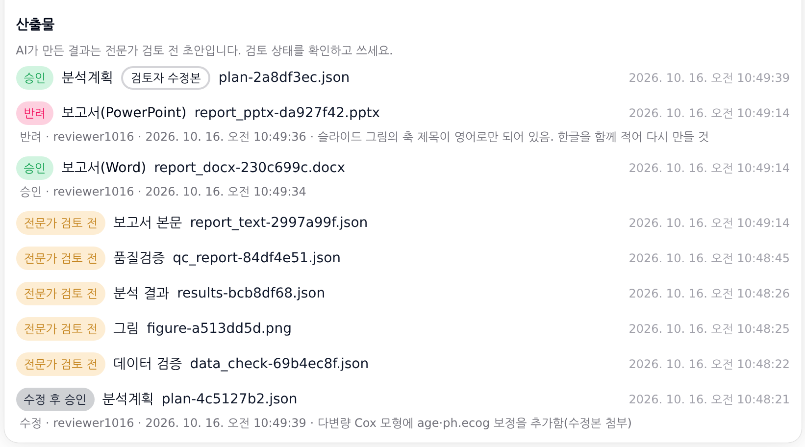
- 검토는 그 분석의 Audit Trail에
review이벤트로 남음 - 기록 항목: 산출물 ID, 결정, 검토자와 역할, 시각, 사유, 검토한 원본 파일의 해시, 수정본 ID
- 원본 해시가 남음 → 검토한 파일이 나중에 바뀌었는지 확인 가능
10.9 검토 화면의 메시지
| 메시지 | 뜻 |
|---|---|
| “수정본은 원본과 같은 형식(.〈확장자〉)이어야 함” | 수정본 형식이 원본과 다름 |
| “수정본 JSON을 읽을 수 없음” | JSON 수정본의 문법이 틀림 |
| “파일이 50MB를 넘음” | 수정본이 크기 한도를 넘음 |
| “검토 권한 없음…” | 검토자가 아닌 계정 |
11 구독 관리 (관리자용)
- 사용자는 구독 신청 화면에서 토스페이먼츠로 결제해 구독을 받음(2.2.1절). 결제가 승인되면 구독이 바로 생기거나 연장됨
- openstat 관리자는 사용자 계정마다 구독을 직접 부여·해지하고, 결제 내역을 보고 결제를 취소함
- 구독 관리 화면은 openstat 관리자만 열 수 있음
여는 순서:
- 관리자 계정으로 로그인(관리자 계정이면 위쪽 메뉴에 “Admin”이 보임)
- “Admin” 클릭 → 관리자 페이지 위에 “이 페이지는 관리자 페이지입니다. 데이터 보안에 유의하시기 바랍니다.”가 나옴
- “구독 관리” 클릭
- 화면 구성: “구독 부여” 카드, “구독 목록” 카드
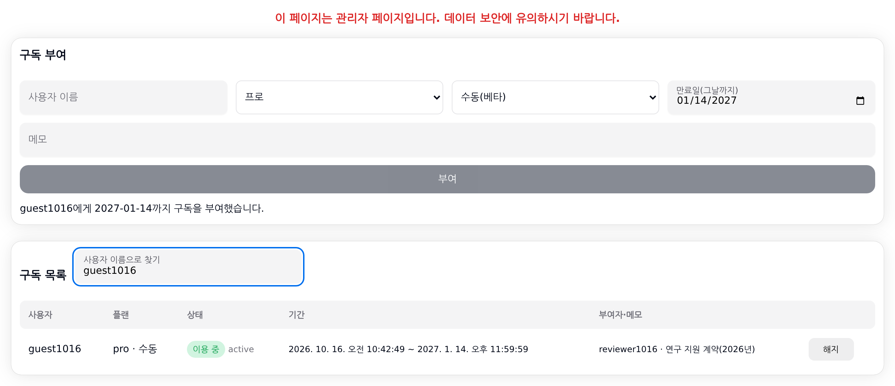
11.1 구독 부여
| 칸 | 내용 |
|---|---|
| “사용자 이름” | 구독을 줄 사용자의 차라투 커뮤니티 사용자 이름. 대소문자까지 정확히 입력. 화면에서 사용자를 검색해 고르는 기능 없음 |
| “플랜” | “프로” 또는 “엔터프라이즈” |
| “결제 주기” | “수동(베타)”, “월”, “연”. 관리자가 직접 줄 때는 “수동(베타)” 사용 |
| “만료일(그날까지)” | 날짜 선택. 처음에는 오늘부터 30일 뒤로 채워져 있음. 그날 23시 59분 59초(한국 시간)까지 사용 가능 |
| “메모” | 부여 이유 등(선택) |
- 사용자 이름 입력
- 만료일 선택
- “부여” 클릭
- 성공하면 “〈사용자 이름〉에게 〈만료일〉까지 구독을 부여했습니다.”가 나오고 목록에 추가됨
- 구독은 누른 시각부터 시작
- 구독 안내 화면을 보고 있던 사용자는 AI 분석 화면을 새로 고치면 바로 사용 가능
- 플랜과 결제 주기는 지금은 기록용. 프로와 엔터프라이즈, 월과 연 사이에 AI 분석 기능이나 이용 범위의 차이 없음
- 화면이 사용자 이름이 있는지 확인하지 않음 → 이름을 정확히 입력
- 실제 커뮤니티 사용자 이름과 다르면 부여는 되지만 그 사용자는 쓸 수 없음
- 만료일이 오늘 이전이면 “부여하지 못했습니다: …” 오류
11.2 구독 목록
- “구독 목록”에는 모든 구독이 만료일이 늦은 것부터 나옴
- “사용자 이름으로 찾기”에 이름을 쓰면 그 사용자의 구독만 나옴(이름이 정확히 같아야 함)
- 구독이 없으면 “구독이 없습니다.”가 나옴
| 열 | 내용 |
|---|---|
| “사용자” | 사용자 이름 |
| “플랜” | 플랜 값(pro, enterprise)과 결제 주기(월, 연, 수동) |
| “상태” | “이용 중” 또는 “이용 불가”, 옆에 내부 상태값(active 사용 중, canceled 해지 신청) |
| “기간” | 시작 시각 ~ 만료 시각 |
| “출처·메모” | 토스 결제(주문번호) 또는 관리자 부여(부여한 관리자 이름)와 메모 |
| (버튼) | 상태가 active인 구독에만 “해지” 버튼 |
11.3 해지와 만료
- “해지” 클릭 → 상태가
canceled로 바뀜- 만료일까지는 계속 “이용 중”이고 사용자도 계속 쓸 수 있음. 남은 기간을 쓰게 하는 동작
- 해지 버튼은 사라지고 해지를 되돌리는 버튼은 없음 → 되돌리려면 같은 만료일로 구독을 새로 부여
- 만료일이 지나면 “이용 불가”. 사용자가 AI 분석을 열면 구독 안내가 나옴
- AI 분석 서버는 구독 확인 결과를 잠시 저장해 두고 씀 → 만료나 해지가 반영되기까지 시간이 걸릴 수 있음
지금 화면으로 할 수 없는 일:
- 이용을 바로 멈추기: 해지는 만료일까지 이용을 허용. 즉시 멈추는 버튼 없음
- 구독 고치기: 만료일이나 플랜을 바꾸는 기능 없음
- 기간을 늘리려면 더 늦은 만료일로 구독을 새로 부여
- 한 사용자에게 쓸 수 있는 구독이 여럿이면 만료일이 가장 늦은 것이 적용됨
- 결제: 정기결제(자동 갱신)와 부분 환불 없음. 결제 취소는 전액만
11.4 결제 내역과 결제 취소
- 구독 관리 화면 아래 “결제 내역(토스)” 카드: 토스 결제 주문이 최근 것부터 나옴
- 열: 주문(주문번호·주문 시각), 사용자, 플랜·금액, 상태(대기·결제 완료·실패·취소), 결제수단·승인, 영수증·비고
- “대기”는 주문만 만들고 결제가 끝나지 않은 것(결제창을 닫은 경우 등). 구독에는 영향 없음
- 결제 완료 건은 “결제 취소”를 누르고 사유를 적어 확정 → 토스에 전액 취소(환불)를 요청하고 그 결제로 만든 구독을 바로 끝냄. 사유는 필수이고 토스에도 전달됨
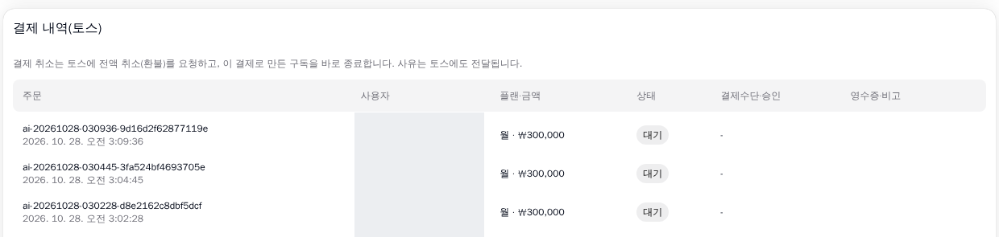
11.5 구독이 필요 없는 계정
- openstat 관리자와 서버 설정으로 지정된 전문가 검토자는 구독 없이 AI 분석을 씀
- 이 계정들은 검토자 권한을 함께 받아 “검토 대기” 카드가 보임(10장)
- 관리자가 아닌 사용자를 검토자로 지정하는 일은 서버 설정으로 함. 화면 기능 없음
- 분석 기록의 Audit Trail을 조회하는 관리자 화면은 openstat.ai에 열려 있지 않음 → Audit Trail은 서비스 운영자가 서버에서 확인
11.6 구독 관리 화면의 메시지
| 메시지 | 뜻 |
|---|---|
| “〈사용자 이름〉에게 〈날짜〉까지 구독을 부여했습니다.” | 부여됨 |
| “부여하지 못했습니다: …” | 입력이 잘못됨(만료일이 지금보다 앞섬 등). 또는 권한 없음 |
| “해지하지 못했습니다: …” | 해지 실패(없는 구독 등) |
| “목록을 불러오지 못했습니다: …” | 목록 조회 실패. 관리자 로그인이 끝났을 수 있음 |
12 자료와 개인정보
- 업로드할 때 일어나는 가명처리와 재식별 위험 점검: 5장
12.1 AI가 보는 것과 보지 않는 것
- 계산은 서버의 R 실행 서비스가 함. AI(언어모델)는 그 앞뒤에서 판단과 서술만 함 → AI에게 넘어가는 자료의 범위가 정해져 있음
| 구분 | AI에게 넘어가는 것 | 넘어가지 않는 것 |
|---|---|---|
| 자료 | 변수 이름, 형식, 결측 수, 범주 목록(30개 이하일 때), 요약통계(사분위수·평균. 예제 자료는 최솟값·최댓값 포함) | 개별 행의 값. 올린 자료의 최솟값·최댓값. 범주가 30개를 넘는 열의 값 목록 |
| 분석 결과 | 결과표(집계값), 주석, 경고, 그림의 이름과 제목 | 그림 파일. 분석을 실행하는 단계에서는 200행이 넘는 결과표(행 단위 자료가 섞였을 수 있다고 봄) |
| 올린 자료의 결과표 | 1~4건인 칸을 “<5”로 가린 결과표 | 가려진 칸의 실제 값 |
| 대화 | 요청 문장, 같은 대화의 최근 요청·답변 | 앞서 끊은 대화 |
- 요청 문장은 그대로 AI에게 감 → 요청에 환자 이름이나 번호 같은 개인정보를 적지 않음
12.2 작은 칸 가림
- 올린 자료를 분석한 결과표에서 빈도나 건수가 1~4인 칸은 AI에게 넘기기 전에 “<5”로 바꿈
- 대상: 빈도(백분율) 칸, 건수 열(n, count, events 등), 기술통계표의 n 행
- 바꾼 칸이 있으면 AI는 그 값을 짐작하거나 인용하지 말라는 안내를 함께 받음
- 예제 자료는 공개 자료라서 가리지 않음
- 이 가림은 AI에게 넘기는 내용에만 적용
- 내려받는 분석 결과 파일, Word·PowerPoint 보고서의 표에는 R이 계산한 실제 값이 그대로 있음
그래서 확인할 것:
- 답변에 “<5”가 보이면 실제 값은 산출물 파일에서 확인
- 결과를 논문·발표·외부 문서에 쓸 때는 파일 속 작은 칸이 특정인을 드러내지 않는지 직접 확인
12.3 처리하는 언어모델
- AI 분석 화면에서 보낸 요청은 전용 언어모델 서버에서 처리
- 외부 언어모델 서비스로 보내지 않는 것
- 올린 자료가 걸린 요청
- 자료를 직접 다루는 일(분석설계·통계실행·품질검증)
- 오케스트레이션
- 이 규칙은 서비스 설정으로도 풀 수 없게 되어 있음
- 전용 서버를 쓸 수 없을 때 외부 서비스로 대신 보내지도 않음 → 화면에 “AI 분석 서버가 지금 응답하지 않습니다.”가 나옴
12.4 내 분석을 볼 수 있는 사람
| 누가 | 볼 수 있는 것 |
|---|---|
| 나 | 내가 만든 분석 전부(내 화면에는 지금 대화만 보임) |
| 다른 일반 사용자 | 볼 수 없음. 주소를 알아도 “프로젝트 없음”으로 응답 |
| 전문가 검토자·openstat 관리자 | 검토자 권한으로 모든 사용자의 분석 열람 가능. 화면에서는 검토 대기에 올라온 분석(산출물이 있는 분석)을 열어 모든 대화와 산출물을 봄 |
- 검토자는 분석의 대화 원문을 읽음 → 대화에 남기면 안 되는 내용은 요청에 쓰지 않음
12.5 기록 보관
| 무엇 | 남는 내용 | 남지 않는 것 |
|---|---|---|
| 분석 | 제목, 자료 ID, 대화(요청·답변 원문), 산출물 파일, 검토 기록 | |
| 올린 자료 | 처리한 정제본 | 원본 파일(처리 직후 지움), 지운 열 |
| Audit Trail | agent 실행마다 요청, 언어모델 호출(모델 이름·토큰 수), 분석모듈 실행과 결과, 산출물 생성, 검토. 앞뒤 기록을 해시로 이어 붙여 고치거나 지우면 드러남 | 요청·답변 원문(해시만 남김) |
| 업로드 처리 이력 | 사용자, 파일 해시·크기·형식, 행·열 수, 지운 열과 가명처리한 열 이름, 재식별 위험 지표 | 원래 파일 이름, 자료 값 |
- 화면에서 분석이나 올린 자료를 지우는 기능 없음(15장)
13 지원 분석 목록과 요청 예
- AI 분석이 실행할 수 있는 분석은 등록된 분석모듈 106종
범주별 수:
| 분석 범주 | 종 수 |
|---|---|
| 생존분석 | 12 |
| 기술통계·그룹비교 | 11 |
| 서베이·표본설계 | 10 |
| 머신러닝(분류) | 9 |
| 메타분석 | 8 |
| 머신러닝(회귀) | 7 |
| 진단·예측성능 | 7 |
| 표본수 계산 | 5 |
| 시각화 | 4 |
| 탐색적 자료분석 | 4 |
| 회귀분석 | 4 |
| 다변량 분석 | 3 |
| 반복측정·GEE | 3 |
| 반복측정·혼합모형 | 3 |
| 상관분석 | 3 |
| 서브그룹 분석 | 3 |
| 스플라인·용량-반응 | 3 |
| CDISC 연계 | 2 |
| 인과성분석 | 2 |
| 기술통계 | 1 |
| 머신러닝(군집) | 1 |
| 설문 분석 | 1 |
범주별 목록 읽는 법:
- 아래 표는 범주마다 분석모듈의 기능 이름과 분석모듈 명세에 실린 예제 요청을 보여 줌
- 명세에는 이 요청에 해당하는 인자(어떤 변수를 어디에 쓰는지)도 함께 적혀 있음. 그 인자로 분석모듈이 실행됨
- 요청을 쓸 때 어떤 정보를 넣어야 하는지 참고
- “예제에 쓴 자료” 열: 그 요청을 어떤 자료 기준으로 썼는지 표시
- “(openstat 예제)”가 붙은 자료(
colon_recur,lung,pbc): 화면의 예제 자료로 바로 해 볼 수 있음. 106종 가운데 37종이 해당 - 다른 이름의 자료: 다른 공개 자료로 쓴 예. openstat 화면에서는 고를 수 없음 → 내 자료를 올린 뒤 변수 이름을 내 자료에 맞게 바꿔 요청
- “자료 필요 없음”: 표본수 계산처럼 자료를 쓰지 않는 분석(5종). 화면에서는 예제 자료 아무것이나 골라 분석을 시작하고 요청을 씀
- “(openstat 예제)”가 붙은 자료(
- 같은 범주 안에서도 분석모듈마다 받는 변수 형식이 다름
- 예: Kaplan-Meier·Cox 같은 일반 생존분석은 시간 변수와 0/1 사건 변수 필요
- 예: 표본설계(서베이) 분석은 가중치·층·집락 변수 필요
- 필요한 변수가 없으면 AI가 되묻거나 실행할 수 없는 이유를 설명
기술통계 (1종)
| 기능 | 요청 예(등록부 예제) | 예제에 쓴 자료 |
|---|---|---|
| 그룹 조합별 요약 통계 | 인종과 흡연 여부 조합별로 출생체중과 산모 나이의 중앙값을 보여줘 | ml_birthwt |
기술통계·그룹비교 (11종)
| 기능 | 요청 예(등록부 예제) | 예제에 쓴 자료 |
|---|---|---|
| 연속변수 3그룹 이상 비교표 | 치료군 세 그룹 간 나이와 림프절 수 평균 차이를 검정해줘 | colon_recur (openstat 예제) |
| 범주형 변수 그룹 비교표(카이제곱) | 치료군별로 성별과 장폐색 비율이 다른지 카이제곱 검정해줘 | colon_recur (openstat 예제) |
| 기술통계표 | 나이, 림프절 수, 장폐색 여부의 기술통계표를 치료군별로 만들어줘 | colon_recur (openstat 예제) |
| 범주형 변수 그룹 비교표(Fisher exact) | 치료군별로 복수(ascites)와 간비대(hepato) 비율을 Fisher 검정으로 비교해줘 | pbc (openstat 예제) |
| 비정규 연속변수 3그룹 이상 비교표 | 간경변 병기(stage)별로 빌리루빈과 알부민 분포를 비교해줘 | pbc (openstat 예제) |
| 비정규 연속변수 2그룹 비교표 | 성별에 따라 양성 림프절 수 분포가 다른지 Mann-Whitney 검정으로 비교해줘 | colon_recur (openstat 예제) |
| 정규성 검정 기반 그룹 비교표 | 성별에 따라 나이, 체중감소, 식사 열량을 비교하는데 정규성에 따라 검정을 골라줘 | lung (openstat 예제) |
| 그룹 쌍별 사후비교표(어느 그룹끼리 다른지) | 치료군 세 그룹의 나이와 장폐색 비율을 비교하고 어느 그룹끼리 다른지 쌍별로 보여줘 | colon_recur (openstat 예제) |
| 표준화 평균차(SMD) 균형표 | 성별 그룹 간 나이, 림프절 수, 장폐색의 균형을 SMD로 보여줘 | colon_recur (openstat 예제) |
| 2단 층화 그룹 비교표 | 치료군마다 성별에 따른 나이와 장폐색 비율 차이를 따로 비교해줘 | colon_recur (openstat 예제) |
| 연속변수 2그룹 비교표 | 성별에 따라 나이와 양성 림프절 수 평균이 다른지 비교해줘 | colon_recur (openstat 예제) |
탐색적 자료분석 (4종)
| 기능 | 요청 예(등록부 예제) | 예제에 쓴 자료 |
|---|---|---|
| 단일 변수 분포 탐색(히스토그램·요약·이상치·빈도) | 나이 변수의 분포를 히스토그램과 요약통계, 이상치로 살펴봐줘 | lung (openstat 예제) |
| Shapiro-Wilk 정규성 판정 | 혈당, 혈압, BMI, 나이가 정규분포를 따르는지 확인해줘 | ml_pima |
| IQR 기반 이상치 탐지 | 혈당, 혈압, BMI, 가족력 지수에 이상치가 얼마나 있는지 확인해줘 | ml_pima |
| 데이터 프로파일링(변수 요약·데이터 품질) | 폐암 자료의 나이, 성별, 수행 상태, 섭취 열량, 체중 감소 변수의 결측과 분포를 점검해줘 | lung (openstat 예제) |
시각화 (4종)
| 기능 | 요청 예(등록부 예제) | 예제에 쓴 자료 |
|---|---|---|
| 그룹별 평균 막대그래프 | 치료군별 나이 평균을 막대그래프로 그리고 군간 차이와 쌍별 비교를 보여줘 | colon_recur (openstat 예제) |
| 그룹별 상자그림 | 치료군별 양성 림프절 수 분포를 상자그림으로 보여주고 군간 차이를 비모수 검정으로 비교해줘 | colon_recur (openstat 예제) |
| 히스토그램(분포) | 성별에 따른 나이 분포를 히스토그램으로 겹쳐서 보여줘 | pbc (openstat 예제) |
| 시점별 선그래프 | 비타민 E 용량군별로 주차별 체중 평균 추이를 선그래프로 그리고 주차마다 군간 차이를 보여줘 | dietox |
상관분석 (3종)
| 기능 | 요청 예(등록부 예제) | 예제에 쓴 자료 |
|---|---|---|
| 상관행렬·산점도 행렬 | 빌리루빈, 알부민, 콜레스테롤, 나이 사이의 상관행렬을 성별로 색을 나눠 보여줘 | pbc (openstat 예제) |
| Pearson 상관분석(산점도) | 빌리루빈과 알부민의 상관관계를 성별로 나눠 산점도와 Pearson 상관계수로 보여줘 | pbc (openstat 예제) |
| Spearman 순위상관분석(산점도) | 빌리루빈과 알부민이 치우친 분포라 Spearman 순위상관으로 관계를 봐줘 | pbc (openstat 예제) |
회귀분석 (4종)
| 기능 | 요청 예(등록부 예제) | 예제에 쓴 자료 |
|---|---|---|
| 선형 회귀 결과표 | 나이, 성별, 치료군, 부종 정도를 보정해서 알부민 수치와의 관련성을 선형 회귀로 분석해줘. 결과는 소수 셋째 자리까지 | pbc (openstat 예제) |
| 로지스틱 회귀 결과표 | 치료군, 나이, 성별, 림프절 4개 이상 여부가 재발과 관련 있는지 로지스틱 회귀로 보여줘 | colon_recur (openstat 예제) |
| 포아송 회귀 결과표 | 추적 기간을 고려해서 인터페론 치료군, 나이, 유전 형태에 따른 중증 감염 발생률 비를 포아송 회귀로 구해줘 | cgd_count |
| 단계적 선택 다중 선형회귀(AIC) | 혈당(glu)을 임신 횟수, 혈압, 피부 두께, BMI, 가족력 지수, 나이로 설명하는 회귀모형을 단계적 선택으로 만들어줘 | ml_pima |
생존분석 (12종)
| 기능 | 요청 예(등록부 예제) | 예제에 쓴 자료 |
|---|---|---|
| 경쟁위험 누적발생함수(CIF)와 Gray 검정 | 간이식을 경쟁위험으로 보고 치료군별 사망 누적발생률을 비교해줘 | pbc (openstat 예제) |
| Landmark 생존분석 | 1년(365일)을 기준으로 landmark 분석해서 성별 생존을 구간별로 비교해줘 | lung (openstat 예제) |
| Kaplan-Meier 생존곡선과 log-rank 검정 | 성별에 따른 생존곡선을 그리고 log-rank 검정과 중앙생존기간을 알려줘 | lung (openstat 예제) |
| 표본설계·IPTW 가중 Kaplan-Meier 생존곡선 | 표본 가중치와 층(edema)을 반영해서 치료군별 가중 생존곡선과 log-rank 검정을 보여줘 | svy_pbc |
| 생존 기준 최적 절단값(최대 선택 log-rank 통계) | 양성 림프절 수(nodes)로 재발 위험이 갈리는 최적 절단값을 찾고 생존곡선을 비교해줘 | colon_recur (openstat 예제) |
| Fine-Gray 경쟁위험 회귀(하위분포 위험비) 결과표 | 간이식을 경쟁위험으로 두고 나이·빌리루빈·성별이 사망 누적발생에 미치는 영향을 Fine-Gray 모형으로 분석해줘 | pbc (openstat 예제) |
| 군집 robust SE Cox 회귀 결과표 | 한 환자의 두 눈이 군집인 걸 고려해서 레이저 치료, 당뇨 유형, 나이에 따른 시력 상실 위험을 robust SE Cox로 분석해줘 | retinopathy |
| 혼합효과 Cox 회귀 결과표 | 기관(inst)을 무작위 효과로 넣은 혼합효과 Cox 모형으로 나이, 성별, ECOG 수행 상태의 위험비를 구해줘 | lung (openstat 예제) |
| 감마 frailty Cox 회귀 결과표 | 한배(litter)를 frailty로 넣어서 약물 투여와 성별에 따른 종양 발생 위험을 분석해줘 | rats |
| 다중상태(경쟁위험) Cox 회귀 결과표 | 간이식과 사망을 경쟁 사건으로 보고 나이, 성별, 치료군에 따른 원인별 위험비를 구해줘 | pbc (openstat 예제) |
| Cox 비례위험 회귀 결과표 | 나이, 성별, ECOG 수행 상태를 보정한 Cox 회귀 결과표 만들어줘 | lung (openstat 예제) |
| 층화 Cox 회귀 결과표 | 림프절 4개 이상 여부로 층화한 Cox 모형으로 치료군, 나이, 성별에 따른 재발 위험을 봐줘 | colon_recur (openstat 예제) |
반복측정·GEE (3종)
| 기능 | 요청 예(등록부 예제) | 예제에 쓴 자료 |
|---|---|---|
| GEE 선형 회귀 결과표 | 돼지 주차별 체중 반복측정에서 구리·비타민E 투여 효과를 AR(1) 상관구조 GEE로 분석해줘. 주차 보정 | dietox |
| GEE 로지스틱 회귀 결과표 | 치료군에 따라 방문별 호흡 상태가 양호할 오즈가 다른지 exchangeable 상관구조 GEE로 분석해줘. 성별, 나이, 기저 상태 보정 | respiratory |
| GEE 포아송 회귀 결과표 | progabide 치료가 2주 단위 발작 횟수를 줄이는지 GEE 포아송 회귀로 분석해줘. 기저 발작 수, 나이, 4번째 기간 보정 | epil |
반복측정·혼합모형 (3종)
| 기능 | 요청 예(등록부 예제) | 예제에 쓴 자료 |
|---|---|---|
| 로지스틱 혼합모형 결과표 | 치료군에 따라 방문별 호흡 상태가 양호할 오즈가 다른지 환자별 무작위 절편 로지스틱 혼합모형으로 분석해줘. 성별, 나이, 기저 상태, 센터 보정 | respiratory |
| 선형 혼합모형 결과표 | 수면 박탈 일수에 따라 반응시간이 어떻게 변하는지 대상자별 무작위 절편과 기울기를 넣은 혼합모형으로 분석해줘 | sleepstudy |
| 포아송 혼합모형 결과표 | progabide 치료가 2주 단위 발작 횟수를 줄이는지 환자별 무작위 절편 포아송 혼합모형으로 분석해줘. 기저 발작 수, 나이, 4번째 기간 보정 | epil |
서브그룹 분석 (3종)
| 기능 | 요청 예(등록부 예제) | 예제에 쓴 자료 |
|---|---|---|
| Cox 서브그룹 분석표 | 대장암 재발에 대한 치료군 효과가 성별, 림프절 4개 이상 여부, 장폐색 여부에 따라 다른지 서브그룹 분석표를 만들어줘. 나이 보정, 3년 재발률 포함 | colon_recur (openstat 예제) |
| GLM 서브그룹 분석표 | 치료군에 따른 재발 오즈가 성별과 림프절 4개 이상 여부에 따라 다른지 로지스틱 서브그룹 분석표를 만들어줘. 나이 보정 | colon_recur (openstat 예제) |
| 혼합모형 서브그룹 분석표 | 반복측정 호흡 상태에서 치료 효과가 센터와 성별에 따라 다른지 환자별 무작위 절편 로지스틱 혼합모형으로 서브그룹 분석해줘. 나이와 기저 상태 보정 | respiratory |
스플라인·용량-반응 (3종)
| 기능 | 요청 예(등록부 예제) | 예제에 쓴 자료 |
|---|---|---|
| 제한 입방 스플라인 Cox 용량-반응 곡선 | 폐암 환자에서 나이에 따른 사망 위험이 비선형인지 스플라인 위험비 곡선으로 보여줘. 성별 보정 | lung (openstat 예제) |
| 일반화 가법 모형(GAM) 평활 곡선 | 빌리루빈 수치에 따른 알부민 평균의 변화를 GAM 평활 곡선으로 보여줘. 나이 보정, 기준은 빌리루빈 1 | pbc (openstat 예제) |
| 제한 입방 스플라인 GLM 용량-반응 곡선 | 나이와 대장암 재발 오즈의 관계가 비선형인지 스플라인 곡선으로 보여줘. 성별과 치료군 보정 | colon_recur (openstat 예제) |
인과성분석 (2종)
| 기능 | 요청 예(등록부 예제) | 예제에 쓴 자료 |
|---|---|---|
| 역확률 가중(IPTW)과 가중 전후 균형 | 직업훈련 참여에 대한 성향점수로 IPTW 가중치를 만들고 가중 전후 공변량 균형과 극단 가중치를 확인해줘 | lalonde |
| 성향점수 매칭과 매칭 전후 균형 | 직업훈련 참여군과 비참여군을 나이, 교육, 인종, 결혼, 고교 졸업, 이전 소득으로 성향점수 1:1 매칭하고 균형을 보여줘 | lalonde |
진단·예측성능 (7종)
| 기능 | 요청 예(등록부 예제) | 예제에 쓴 자료 |
|---|---|---|
| ROC 곡선과 AUC | 나이, 성별, S100B로 6개월 예후 불량을 예측하는 모형의 ROC 곡선과 AUC를 보여줘 | asah |
| 모형 간 AUC 비교(DeLong 검정) | 나이·성별 모형에 S100B를 더하면 예후 불량 예측 AUC가 좋아지는지 DeLong 검정으로 비교해줘 | asah |
| 최적 절단값과 진단정확도(민감도·특이도·PPV·NPV) | S100B로 예후 불량을 판정할 최적 절단값과 그때의 민감도, 특이도, PPV, NPV를 구해줘 | asah |
| 통합판별개선지수(IDI) | 나이·성별 모형에 S100B를 추가했을 때 판별력이 얼마나 개선되는지 IDI로 보여줘 | asah |
| 순재분류지수(NRI) | 나이·성별 모형에 S100B를 추가했을 때 예후 불량 위험 재분류가 개선되는지 NRI로 보여줘. 위험 범주는 20%, 50%로 나눠줘 | asah |
| 생존모형 재분류 지표(IDI·NRI) | 나이·성별 모형에 ECOG를 추가했을 때 1년 사망 위험 예측의 IDI와 NRI를 구해줘 | lung (openstat 예제) |
| 시간의존 ROC·AUC와 생존 예측모형 성능 비교 | 나이·성별 모형에 ECOG를 추가하면 1년 사망 예측이 좋아지는지 시간의존 ROC로 비교해줘 | lung (openstat 예제) |
표본수 계산 (5종)
| 기능 | 요청 예(등록부 예제) | 예제에 쓴 자료 |
|---|---|---|
| 군집 무작위배정 임상시험 표본수(이분형 결과) | 대조군 감염률 25%, 중재군 20%, 군집 크기 4, ICC 0.0506일 때 군집 무작위배정 연구의 표본수를 구해줘 | 자료 필요 없음 |
| 군집 무작위배정 임상시험 표본수(연속형 결과) | 군집 크기 4, ICC 0.2747인 군집 무작위배정 연구에서 대조군 평균 54.1, 중재군 평균 43.3, 표준편차 9.9일 때 검정력 80%로 필요한 표본수를 구해줘 | 자료 필요 없음 |
| 관찰자 간 일치도(kappa) 표본수(신뢰구간 폭 기반) | 평가자 3명, 유병률 0.2인 이분형 판정에서 kappa 0.733을 ±0.1 정밀도로 추정하려면 몇 명이 필요해? | 자료 필요 없음 |
| 관찰자 간 일치도(kappa) 표본수(검정력 기반) | 평가자 3명이 이분형으로 판정하고 유병률이 0.2일 때 kappa 0.389를 검출하려면 몇 명을 평가해야 해? | 자료 필요 없음 |
| 생존분석 표본수(로그순위 검정, Lachin-Foulkes) | 대조군 사건률 0.036/인년, 치료군 0.06/인년, 연구 4년(등록 3년), 탈락률 0.02/년일 때 로그순위 검정 표본수를 구해줘 | 자료 필요 없음 |
메타분석 (8종)
| 기능 | 요청 예(등록부 예제) | 예제에 쓴 자료 |
|---|---|---|
| 출판 편향 평가(funnel plot, Egger 검정) | 혈전용해 치료 임상시험 70건의 사망 위험비에 출판 편향이 있는지 funnel plot과 Egger 검정으로 확인해줘 | meta_thrombolysis |
| 이분형 결과 메타분석(사건 수·N) | 심근경색 후 아스피린 임상시험 7건의 사망 위험비를 메타분석하고 forest plot을 그려줘 | meta_aspirin |
| 연속형 결과 메타분석(평균·SD) | 심리치료 연구 5건의 입원 일수를 표준화 평균 차이로 메타분석해줘 | meta_mental |
| Drapery plot(p값 함수) | BCG 백신 임상시험 13건으로 drapery plot을 그려서 연구별 p값 함수와 통합 효과를 보여줘 | meta_bcg |
| 효과크기·95% CI 통합 메타분석(일반 역분산) | CLL 임상시험 4건의 전체생존 위험비와 95% CI를 통합해줘 | meta_cll_hr |
| 메타분석 이질성 평가(Cochran Q·I²·τ²·예측구간·영향 분석) | BCG 백신 임상시험 13건의 결핵 예방 효과가 연구마다 얼마나 다른지 이질성을 평가하고 어느 연구가 이질성을 키우는지 알려줘 | meta_bcg |
| 단일 비율 메타분석(유병률·발생 비율) | 심근경색 후 우울증 유병률 연구 19건을 메타분석해 통합 유병률을 구해줘 | meta_depression_mi |
| Trim-and-fill 출판 편향 보정 | 혈전용해 치료 임상시험 70건의 사망 위험비를 trim-and-fill로 출판 편향을 보정해줘 | meta_thrombolysis |
서베이·표본설계 (10종)
| 기능 | 요청 예(등록부 예제) | 예제에 쓴 자료 |
|---|---|---|
| 서베이 범주형 변수 그룹 비교표 | NHANES 표본설계를 반영해서 인종에 따라 고콜레스테롤, 연령군, 성별 분포가 다른지 검정해줘 | svy_nhanes |
| 서베이 연속변수 그룹 비교표 | 부종(edema) 층과 표본 가중치를 반영해서 치료군에 따라 나이, 빌리루빈, 알부민 평균이 다른지 비교해줘 | svy_pbc |
| 서베이 가중 Cox 회귀표 | 표본추출 가중치를 반영해서 치료군, 나이, 빌리루빈, 알부민이 사망 위험과 관련 있는지 Cox 회귀로 분석해줘 | svy_pbc |
| 서베이 가중 기술통계표 | NHANES 가중치를 반영해서 인종별 고콜레스테롤·연령군·성별 분포를 요약해줘 | svy_nhanes |
| 서베이 선형 회귀표 | 층화 표본 가중치를 반영해서 학교 API 점수를 영어학습자 비율, 급식지원 비율, 전학생 비율로 회귀분석해줘 | svy_apistrat |
| 서베이 로지스틱 회귀표 | NHANES 표본설계를 반영해서 고콜레스테롤과 인종, 연령군, 성별의 관련성을 로지스틱 회귀로 분석해줘 | svy_nhanes |
| 서베이 그룹 쌍별 사후비교표(어느 그룹끼리 다른지) | NHANES 가중치를 반영해서 인종 네 그룹 간 고콜레스테롤과 성별 분포를 비교하고 어느 그룹끼리 다른지 쌍별로 보여줘 | svy_nhanes |
| 서베이 비정규 연속변수 그룹 비교표(중앙값·순위 검정) | 부종(edema) 층과 가중치를 반영해서 병기(stage)별 빌리루빈과 ALP 분포를 중앙값으로 비교하고 검정해줘 | svy_pbc |
| 서베이 가중 표준화 평균차(SMD) 표 | 가중치를 적용한 뒤 치료군 간 나이, 빌리루빈, 성별, 병기 분포가 균형을 이루는지 SMD로 보여줘 | svy_pbc |
| 서베이 가중 Cox 서브그룹 분석표 | 가중치를 반영해서 치료군의 사망 위험비를 성별과 간비대 여부 서브그룹별로 보여주고 나이를 보정해줘 | svy_pbc |
설문 분석 (1종)
| 기능 | 요청 예(등록부 예제) | 예제에 쓴 자료 |
|---|---|---|
| Likert 응답 분포 차트 | 수학 불안 설문 5개 문항의 응답 분포를 Likert 차트로 보여줘 | likert_mass |
다변량 분석 (3종)
| 기능 | 요청 예(등록부 예제) | 예제에 쓴 자료 |
|---|---|---|
| 주성분분석(PCA)과 biplot | 유방 종괴 생검의 세포 소견 9개로 주성분분석을 하고 진단(양성·악성)별로 biplot을 그려줘 | ml_biopsy |
| 분류나무(조건부 추론 나무, 범주형 목적변수) | 당뇨 여부(type)를 혈당, BMI, 나이, 가족력 지수로 나누는 분류나무를 그려줘 | ml_pima |
| 회귀나무(모형 기반 재귀 분할, 연속형 목적변수) | 혈당(glu)이 BMI, 나이, 당뇨 여부에 따라 어떻게 나뉘는지 회귀나무로 보여줘 | ml_pima |
머신러닝(분류) (9종)
| 기능 | 요청 예(등록부 예제) | 예제에 쓴 자료 |
|---|---|---|
| K-최근접이웃 분류 | Pima 자료에서 당뇨 여부(type)를 검사값과 나이로 예측하는 K-최근접이웃 분류 모형을 만들고 검증셋 성능을 보여줘 | ml_pima |
| LightGBM 분류 | Pima 자료에서 당뇨 여부(type)를 검사값과 나이로 예측하는 LightGBM 분류 모형을 만들고 검증셋 성능을 보여줘 | ml_pima |
| 벌점 로지스틱 회귀 분류(머신러닝) | Pima 자료에서 당뇨 여부(type)를 검사값과 나이로 예측하는 벌점 로지스틱 회귀 분류 모형을 만들고 검증셋 성능을 보여줘 | ml_pima |
| 신경망(다층 퍼셉트론) 분류 | Pima 자료에서 당뇨 여부(type)를 검사값과 나이로 예측하는 신경망 모형을 만들고 검증셋 성능을 보여줘 | ml_pima |
| 나이브 베이즈 분류 | Pima 자료에서 당뇨 여부(type)를 검사값과 나이로 예측하는 나이브 베이즈 분류 모형을 만들고 검증셋 성능을 보여줘 | ml_pima |
| 랜덤포레스트 분류 | Pima 자료에서 당뇨 여부(type)를 검사값과 나이로 예측하는 랜덤포레스트 분류 모형을 만들고 검증셋 성능을 보여줘 | ml_pima |
| 선형 서포트 벡터 머신 분류 | Pima 자료에서 당뇨 여부(type)를 검사값과 나이로 예측하는 선형 서포트 벡터 머신 분류 모형을 만들고 검증셋 성능을 보여줘 | ml_pima |
| 의사결정나무 분류(CART) | Pima 자료에서 당뇨 여부(type)를 검사값과 나이로 예측하는 의사결정나무 분류 모형을 만들고 검증셋 성능을 보여줘 | ml_pima |
| XGBoost 분류 | Pima 자료에서 당뇨 여부(type)를 검사값과 나이로 예측하는 XGBoost 분류 모형을 만들고 검증셋 성능을 보여줘 | ml_pima |
머신러닝(회귀) (7종)
| 기능 | 요청 예(등록부 예제) | 예제에 쓴 자료 |
|---|---|---|
| K-최근접이웃 회귀 | 출생체중(kg)을 산모 특성으로 예측하는 K-최근접이웃 회귀 모형을 만들고 검증셋 성능과 중요한 변수를 보여줘 | ml_birthwt |
| LightGBM 회귀 | 출생체중(kg)을 산모 특성으로 예측하는 LightGBM 회귀 모형을 만들고 검증셋 성능과 중요한 변수를 보여줘 | ml_birthwt |
| 벌점 선형 회귀(머신러닝) | 출생체중(kg)을 산모 특성으로 예측하는 벌점 선형 회귀 모형을 만들고 검증셋 성능과 중요한 변수를 보여줘 | ml_birthwt |
| 신경망(다층 퍼셉트론) 회귀 | 출생체중(kg)을 산모 특성으로 예측하는 신경망 모형을 만들고 검증셋 성능과 중요한 변수를 보여줘 | ml_birthwt |
| 랜덤포레스트 회귀 | 출생체중(kg)을 산모 특성으로 예측하는 랜덤포레스트 회귀 모형을 만들고 검증셋 성능과 중요한 변수를 보여줘 | ml_birthwt |
| 의사결정나무 회귀(CART) | 출생체중(kg)을 산모 특성으로 예측하는 의사결정나무 회귀 모형을 만들고 검증셋 성능과 중요한 변수를 보여줘 | ml_birthwt |
| XGBoost 회귀 | 출생체중(kg)을 산모 특성으로 예측하는 XGBoost 회귀 모형을 만들고 검증셋 성능과 중요한 변수를 보여줘 | ml_birthwt |
머신러닝(군집) (1종)
| 기능 | 요청 예(등록부 예제) | 예제에 쓴 자료 |
|---|---|---|
| K-평균 군집분석(실루엣 기준 군집 수 선택) | 유방 종괴 생검의 세포 소견 9개로 검체를 군집화하고 적절한 군집 수와 군집별 특징을 보여줘 | ml_biopsy |
CDISC 연계 (2종)
| 기능 | 요청 예(등록부 예제) | 예제에 쓴 자료 |
|---|---|---|
| CDISC ADaM ADSL 분석집단별 기저 특성표 | 안전성 분석집단에서 계획 치료군별로 나이, 성별, 인종, 기저 BMI의 기저 특성표를 만들어줘 | cdisc_adsl |
| CDISC ADaM ADTTE 사건까지 시간 분석(KM·log-rank·Cox) | ADTTE에서 첫 피부 이상반응까지 시간(TTDE)을 실제 치료군별로 비교해줘. 위약 대비 위험비도 알려줘 | cdisc_adtte |
13.1 목록에 없는 분석
- 목록에 없는 방법을 요청하면 AI는 실행하지 않고 지원하지 않는다고 설명
- 비슷한 분석모듈이 있으면 그 이름을 대안으로 알려 줌
- 다만 품질 측정에서는 지원하지 않는다고 설명하면서 비슷한 다른 분석을 “참고용”으로 실행한 경우가 있었음(14장) → 답변에 적힌 방법이 요청한 방법인지 확인
- 자료를 가공하는 일(변수 재코딩, 범주 합치기, 파생 변수, 특정 대상만 고르기, 이상치 행 지우기)은 분석모듈에 없음 → 자료를 올리기 전에 처리
14 결과 활용 전 확인 사항
- AI 분석의 계산은 검증된 분석모듈이 함
- 어떤 분석모듈을 어떤 변수로 실행할지 고르고 결과를 글로 옮기는 일은 AI가 함 → 아래는 이 부분의 품질을 실제로 잰 결과와 거기서 나온 사용 요령
14.1 측정 방법
- 2026-10-11에 정답을 미리 정해 둔 시험 문제 317개를 같은 조건으로 5번씩, 모두 1,585회 실행
- 정상 요청 247개, 문제가 있는 요청 70개
- 문제가 있는 요청: 자료에 없는 변수, 모호한 요청, 서로 모순된 조건, 지원하지 않는 방법처럼 AI가 그대로 실행하면 안 되는 요청
- 측정 대상: 분석 하나를 실행하는 통계실행 agent(분석모듈 106종, 언어모델 Qwen/Qwen3.8-27B)
- 분석계획, 보고서 서술, 연구 전체를 진행하는 오케스트레이션의 품질은 이 방식으로 재지 않음(미측정)
- 시험 문제 출제: 개발과 분리된 별도의 AI agent가 출제하고 따로 풀어 검증. 문제 표본 30개는 사람이 검수(2026-10-13, 모두 적절)
- 답변 속 수치는 자동으로 대조하고, 답변 표본 40건은 사람이 검수(2026-10-13, 모두 근거 있음)
14.2 측정 결과
| 지표 | 뜻 | 값 |
|---|---|---|
| 정확도 | 정상 요청에서 맞는 분석모듈을 실행해 정답 결과표를 얻고 답변까지 마친 비율 | 98.5% |
| 분석모듈 선택 | 정상 요청에서 맞는 분석모듈을 고른 비율 | 99.2% |
| 일관성 | 같은 요청을 5번 돌렸을 때 가장 많이 나온 결과의 비율 | 99.6% |
| 근거 미확인 수치 | 답변 속 수치 33,701개 가운데 분석 결과·요청·자료 구조에서 같은 값을 찾지 못한 비율(반올림한 값과 0.05 같은 관례 상수 포함) | 4.5% |
| 위에서 반올림·관례 상수를 뺀 비율 | 결과에서 계산했거나 근거를 알 수 없는 수치 | 1.7% |
| 예외 처리 | 문제가 있는 요청을 정해진 방식(되묻기, 설명, 실행하지 않기)으로 처리한 비율 | 82.0% |
- 정상 요청의 정확도 세부
- 방법을 요청에 적은 요청 100.0%, 방법을 적지 않은 요청 96.5%
- 한국어 요청 98.6%, 영어 요청 97.6%
- 답변에 근거 미확인 수치가 하나라도 있는 실행: 36.4%
- 근거 미확인 수치의 종류
- 결과표 값을 반올림해 옮긴 수치 725개(가장 많음)
- 결과에서 계산했거나 근거를 알 수 없는 수치 558개
- 관례 상수 232개
- 정해진 결과를 내는 정상 요청은 높은 비율로 맞혔음. 문제가 있는 요청은 유형에 따라 차이가 컸음(아래 표)
| 요청 유형 | 정해진 방식으로 처리 | 비율 |
|---|---|---|
| 자료에 없는 변수를 요청 | 60/60 | 100.0% |
| 변수 이름 오타·다른 이름 | 50/50 | 100.0% |
| 범위 밖 요청(개별 행 나열·자료 수정·임의 코드 실행 등) | 35/40 | 87.5% |
| 자료 조건에 맞지 않는 방법(사건 코딩·반복측정 등) | 50/60 | 83.3% |
| 지원하지 않는 방법 | 43/60 | 71.7% |
| 서로 모순된 조건 | 20/30 | 66.7% |
| 모호한 요청(변수·기준 시점 등이 빠짐) | 29/50 | 58.0% |
14.3 측정으로 확인된 약점과 대처
- 모호한 요청을 되묻지 않고 실행
- 모호한 요청 가운데 58%만 되묻거나 설명했고 나머지는 그럴듯한 기본값을 골라 실행
- 예: 기준 시점 없이 landmark 분석을 요청하면 임의의 시점으로 실행
- 대처: 결과변수, 비교 집단, 보정 변수, 기준값을 요청에 적음. 답변을 받으면 AI가 고른 변수와 기준값이 의도와 같은지 확인
- 모순된 조건에서 한쪽을 골라 실행
- 서로 맞지 않는 조건을 주면 모순을 지적하면서도 한쪽을 골라 실행한 경우가 있었음
- 대처: 답변이 모순을 언급하면 결과를 쓰기 전에 조건을 정리해 다시 요청
- 지원하지 않는 방법 대신 다른 분석을 실행
- 지원하지 않는다고 설명하면서 비슷한 분석을 “참고용”으로 실행한 경우가 있었음
- 대처: 답변의 방법 이름이 요청과 같은지 확인
- 자료 구조에 맞지 않는 방법을 씀
- 반복측정 자료에 일반 포아송 회귀를, 한 사람에게 사건이 여러 번 생기는 자료에 일반 Cox 회귀를 그대로 실행한 경우가 있었음
- 대처: 자료 구조(한 사람의 여러 측정, 병원별 군집, 반복 사건, 표본설계 가중치)를 요청에 적음
- 분석을 실행하지 않고 수치를 지어낸 답변
- 정상 요청 1개에서 5번 모두 발생. AI가 분석모듈을 실행하지 않고 결과표와 사건 수를 지어내 “요청하신 분석을 수행했습니다”로 시작하는 답변을 냄
- 보고서 서술에는 결과에 없는 수치를 막는 장치가 있음. 분석 하나를 바로 실행하는 답변에는 아직 없음
- 답변만으로는 이런 경우를 알아보기 어려움
- 대처: 논문이나 발표에 쓸 수치는 계획을 거쳐 실행하게 요청하고 분석 결과 파일(
results-….json)이나 Word 보고서의 표와 대조
- 드문 분석을 지원하지 않는다고 답함
- 등록된 분석인데 찾지 못하고 지원하지 않는다고 답한 경우가 있었음
- 대처: 13장 목록에서 기능 이름을 찾아 그대로 넣어 다시 요청
- 선택 조건을 빠뜨림
- 일치도(kappa) 표본수 계산에서 귀무가설의 kappa 값을 넣지 않아 다른 표본수가 나온 경우가 있었음
- 대처: 표본수 계산은 유의수준, 검정력, 효과 크기, 귀무값 같은 조건을 모두 적음. 답변에 적힌 조건을 확인
14.4 결과를 쓰기 전 점검표
- 방법: 답변이나 보고서에 적힌 분석 방법이 의도한 방법인지
- 실제로 실행한 분석모듈은 분석 결과 파일의
skill과 Word 보고서 “부록: 실행 기록”에서 확인 가능
- 실제로 실행한 분석모듈은 분석 결과 파일의
- 변수: 결과표의 결과변수, 그룹 변수, 보정 변수가 의도한 변수인지. 범주 코드의 뜻이 맞게 해석됐는지
- 수치: 답변·서술의 수치가 결과표의 값과 같은지
- 경고와 주석: 결과의
warnings·notes, 보고서의 “경고:”·“주:” 줄을 읽었는지 - 점검 결과: 데이터 검증과 품질검증의
block·warn·fail항목을 확인했는지 - 작은 칸: 올린 자료라면 결과표의 1~4명 칸이 특정인을 드러내지 않는지
- 검토: 외부에 내기 전에 통계 전문가의 검토를 받았는지. 보고서의 검토 상태 줄이 무엇인지
15 현재 제한
- 지금 버전에서 할 수 없는 것과 아직 정하지 않은 것
| 범위 | 제한 |
|---|---|
| 구독 | 결제는 한 번에 1개월·1년(정기결제 아님). 결제 취소는 전액만(부분 환불 없음), 가상계좌 미지원. 관리자 해지는 만료일까지 이용을 허용. 즉시 멈추거나 만료일을 고치는 기능 없음 |
| 자료 | 자료를 가공하는 기능(재코딩, 범주 합치기, 파생 변수, 대상 고르기, 날짜 계산) 없음. 올리기 전에 준비 |
| 자료 | 화면에 변수 목록을 보여 주는 칸 없음. AI에게 물어봄 |
| 자료 | 업로드 처리 결과는 올린 직후 “새 분석” 카드에만 보이고 저장되지 않음 |
| 자료 | 분석 하나에 자료 하나. 같은 파일을 다른 분석에서 쓰려면 다시 올림 |
| 삭제 | 화면에서 분석이나 올린 자료를 지우는 기능 없음. 서버에 남은 정제본의 보관 기간도 아직 정하지 않음 |
| 대화 | AI가 함께 보는 범위는 지금 대화의 최근 4번 요청·답변. 앞서 끊은 대화는 내 화면에 다시 보이지 않음 |
| 결과 | 분석 하나를 바로 실행한 요청은 결과 파일과 그림을 남기지 않음 |
| 결과 | 분석 하나를 바로 실행한 답변에는 결과에 없는 수치를 막는 장치가 아직 없음 |
| 보고서 | PowerPoint에는 분석마다 첫 결과표(14행까지)와 첫 그림만 들어감. 결과표를 엑셀 파일로 받는 기능 없음 |
| 검토 | 검토자는 검토 모드에서 요청을 보낼 수 없음. 다시 실행하거나 보고서를 새로 만드는 일은 분석한 사용자가 함 |
| 검토 | 반려는 상태를 남길 뿐 이후 단계에서 그 산출물을 쓰지 못하게 막지 않음 |
| 관리 | 검토자를 지정하는 화면, Audit Trail을 조회하는 화면이 openstat.ai에 없음 |
16 자주 묻는 질문
내 자료가 AI에게 그대로 보이나요?
- 그대로 보이지 않음. 계산은 서버의 R 실행 서비스가 함
- AI가 보는 것은 변수 이름·형식·요약통계 같은 자료 구조와 분석 결과표(집계값)뿐
- 올린 자료의 결과표는 1~4건인 칸을 가린 뒤 넘김
- 다만 요청 문장은 그대로 AI에게 감 → 요청에 개인정보를 쓰지 않음(12장)
먼저 연습해 볼 수 있나요?
같은 자료로 여러 주제를 분석하려면 매번 새로 올려야 하나요?
- 새로 올릴 필요 없음. 같은 분석 안에서 “새 대화”를 누르고 다음 주제를 요청
- 산출물은 분석에 계속 쌓임
- 다른 자료를 쓸 때만 새 분석을 만듦
요청을 영어로 써도 되나요? 보고서를 영어로 받을 수 있나요?
- 요청은 영어로 써도 됨
- 품질 측정에서 영어 요청의 정확도는 97.6%로 한국어(98.6%)와 비슷했음
- 답변은 한국어로 쓰도록 되어 있음
- 보고서는 “영문으로”라고 요청하면 영어로 만듦
그림은 어디서 받나요?
- 계획을 거쳐 실행한 분석의 그림만 산출물 목록에
figure-….png로 생김. Word·PowerPoint 보고서에도 들어감 - “생존곡선을 그려 줘”처럼 분석 하나를 바로 요청하면 그림 파일이 남지 않음
- 그림이 필요하면 “분석계획을 세워 실행하고 표와 그림만 모아 줘”처럼 요청
결과표를 엑셀로 받을 수 있나요?
- 엑셀 파일로 내보내는 기능 없음
- Word 보고서의 표를 복사하거나 분석 결과 JSON 파일을 씀
같은 요청을 다시 보내면 같은 결과가 나오나요?
- 계산은 분석모듈이 함 → 같은 자료와 인자면 결과표가 같게 나오도록 되어 있음
- 연구 전체를 진행할 때는 품질검증에서 다시 실행해 이를 확인
- 달라질 수 있는 것은 AI가 고르는 분석모듈과 인자
- 품질 측정에서 같은 요청을 5번 실행했을 때 가장 많이 나온 결과의 비율은 99.6%
- 요청에 방법과 변수를 적을수록 결과가 흔들리지 않음
실행 중에 창을 닫으면 어떻게 되나요?
- 실행 중에는 창을 닫지 말고 기다림
- 응답이 오지 않는다는 안내가 나왔다면 다시 보내기 전에 분석을 다시 열어 답변과 산출물이 생겼는지 먼저 확인(9장)
AI가 확인 질문을 했는데 다른 요청을 보내면 어떻게 되나요?
- 같은 대화이므로 AI는 앞의 질문과 함께 새 요청을 읽음
- 질문을 버리고 다른 일을 시키려면 “새 대화”를 누른 뒤 요청
산출물이 “반려”로 바뀌었어요.
- 산출물 아래 줄에 검토자의 사유가 있음
- 사유에 적힌 대로 요청을 고쳐 다시 실행
- 반려된 산출물은 이후 단계에서 자동으로 빠지지 않음 → 계획이 반려됐다면 새 계획을 세우게 요청한 뒤 보고서를 만듦(10장)
보고서의 “검토 전 초안” 문구를 지우고 제출해도 되나요?
- 이 문구는 계획과 결과가 전문가 검토를 거치지 않았다는 표시
- 검토 없이 문구만 지워 외부에 내지 않음
- 검토를 거친 뒤 보고서를 다시 만들면 “전문가 검토 완료”가 적힘(8.5절)
답변에 “<5”가 보여요.
- 올린 자료의 결과표에서 1~4건인 칸을 AI에게 가린 것
- 실제 값은 산출물 파일에 있음
- 외부에 낼 때는 그 작은 칸을 직접 확인
올린 뒤 분석에 필요한 열이 사라졌어요.
- 열 이름에
birth,name,tel같은 식별자 단어가 들어 있으면 열 전체가 지워짐 id가 들어 있으면 가명으로 바뀜- 열 이름을 바꿔 새 분석으로 다시 올림(5.4절)
분석이나 올린 자료를 지우고 싶어요.
- 화면에서 지우는 기능은 아직 없음(15장)
구독은 어떻게 받나요?
- 구독 안내 화면의 “플랜 보기” → 구독 신청 화면에서 토스페이먼츠로 결제하면 바로 구독이 시작됨(2.2.1절)
- openstat 관리자가 계정에 직접 부여하기도 함